第 3 章 一维稳态导热#
本章解决：拿到了第 2 章的热扩散方程，这一章教你把它在最简单也最常用的一类场景——一维、稳态——里用到底：无内热源时，平壁、圆筒壁、球壁的温度分布与热流量各有闭式解，而更重要的产物是热阻（thermal resistance）概念——任何复杂的复合壁体都能画成一张"电阻网络"，串并联一化简，总热流量和每一层界面温度全部到手；有内热源时（通电芯片、核燃料棒、混凝土水化），温度分布变成抛物线，热阻网络失效，改用能量平衡硬解；工程上最重要的扩展是肋片（fin）扩展表面分析——从一般方程到四种肋端情形、肋片效率/效能、总表面效率，一整套给对流"扩面积"的设计语言。章末把这套语言推广到三个前沿场景：人体生物传热、温差电发电、微纳尺度导热。
3.0 本章导图#
3.1 平壁#
平壁（plane wall）一维导热：温度只是坐标 \(x\) 的函数，热量只沿 \(x\) 方向传。图 3.1a 是标准场景：一道平壁隔开两种温度不同的流体，热从热流体（\(T_{\infty,1}\)）对流到壁面（\(T_{s,1}\)），导热穿过壁体，再从另一表面（\(T_{s,2}\)）对流给冷流体（\(T_{\infty,2}\)）。分析从壁体内部开始：先求温度分布，再求热流量。
3.1.1 温度分布#
无内热源、稳态时，热方程取式 (2.23) 的形式：
由式 (2.2) 立刻读出物理结论：无内热源、一维稳态时，热流密度 \(q_x''\) 是与 \(x\) 无关的常数。若导热系数为常数，式 (3.1) 积分两次得通解
定解要靠边界条件。取第一类边界条件：
代 \(x=0\) 得 \(C_2 = T_{s,1}\)；代 \(x=L\) 得 \(C_1 = (T_{s,2} - T_{s,1})/L\)。代回通解：
结论：无内热源、常数 \(k\) 的一维稳态平壁导热，温度分布是直线。
拿到分布后用傅里叶定律求热流量：
\(A\) 是垂直于传热方向的壁面面积，对平壁是与 \(x\) 无关的常数。热流密度为
式 (3.4)、(3.5) 说明 \(q_x\) 与 \(q_x''\) 都是与 \(x\) 无关的常数。
这是解导热问题的标准流程：热方程 → 通解 → 边界条件定常数 → 傅里叶定律求热流量。注意这里给壁面温度当边界条件，虽然工程上通常已知的是流体温度——但表面温度与相邻流体温度用表面能量平衡（1.3.1 节）一挂钩就能换算，也可以直接把表面能量平衡当第三类边界条件（习题 3.1 的做法）。
3.1.2 热阻#
式 (3.4) 暗示了一个极其重要的概念：在"一维、无内热源、物性常数"的条件下，热的扩散与电荷的输运完全类似——电有电阻，热也有热阻（thermal resistance）。把热阻定义为"驱动势与对应的输运速率之比"，由式 (3.4) 得平壁导热热阻：
同一系统里电传导的欧姆定律给出电阻
式 (3.6) 与 (3.7) 结构完全一样：温差对电压，热流量对电流，\(k\) 对电导率 \(\sigma\)。
对流换热同样可以定义热阻。牛顿冷却公式为
对流热阻为
热路（thermal circuit）表示法是概念化与定量计算的双重利器。图 3.1b 画出了"对流—导热—对流"的等效热路。因为 \(q_x\) 在整个网络中处处相等，逐段写：
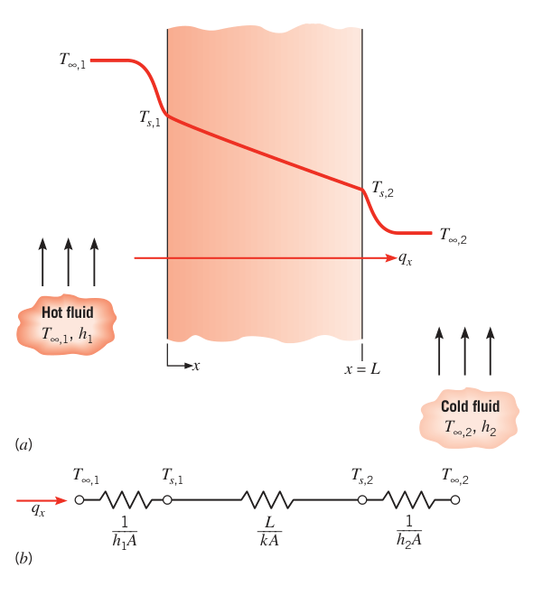
用总温差 \(T_{\infty,1} - T_{\infty,2}\) 和总热阻 \(R_{\mathrm{tot}}\) 表示：
导热与对流热阻串联相加：
当换热系数小（气体自然对流常如此）时，表面与大环境之间的辐射交换也可能重要。参照式 (1.8) 定义辐射热阻：
"表面对大环境"的 \(h_r\) 由式 (1.9) 算。表面处的辐射与对流热阻并联；若 \(T_\infty = T_{sur}\)，两者可合并为一个等效表面热阻。
3.1.3 复合壁#
等效热路同样适用于更复杂的复合壁（composite wall）——由不同材料的多层壁体组成，可含任意多个串联、并联热阻。图 3.2 的串联复合壁，一维热流量写为
\(\sum R_t\) 包含全部热阻，逐项展开：
也可以用"每段自己的温差与热阻"逐段表达——这就是界面温度法：
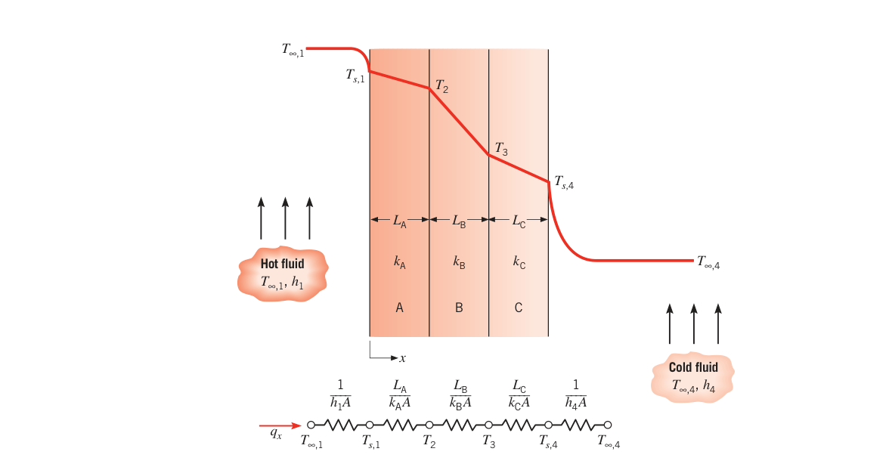
拓展：界面温度法的用法
复合壁计算里最实用的技巧：\(q_x\) 处处相等，所以"总温差除以总热阻"与"任一段温差除以该段热阻"给出同一个 \(q_x\)。已知 \(q_x\) 后，沿热路逐段加、减 \(q_x R_t\)，就能把每一层界面的温度（\(T_2\)、\(T_3\)……）全部算出来——工程上验收多层保温结构时，关心的正是层间温度（例如露点校核）。
复合系统常用总传热系数（overall heat transfer coefficient）\(U\) 来概括，定义类比牛顿冷却公式：
\(\Delta T\) 是总温差。由式 (3.14) 与 (3.17)，\(UA = 1/R_{\mathrm{tot}}\)。对图 3.2 的复合壁：
一般地：
复合壁还可能是串–并联结构（图 3.3）：复合壁 E–F/G–H，中间层由两种材料 F、G 并排组成。这时热流其实已是多维的，但工程上常近似按一维处理，且有两种画法：
- (a) 假设垂直于 \(x\) 的表面是等温面：F、G 两支路先并联、再与 E、H 串联；
- (b) 假设平行于 \(x\) 的表面是绝热面：E、F、H 一条支路串联，E、G、H 另一条支路串联，两条支路再并联。
两种画法得到的 \(R_{\mathrm{tot}}\) 不同，相应的 \(q\) 夹逼（bracket）真实热流量：真实值介于两者之间。\(k_F\) 与 \(k_G\) 相差越大，多维效应越显著，两个限界分得越开。
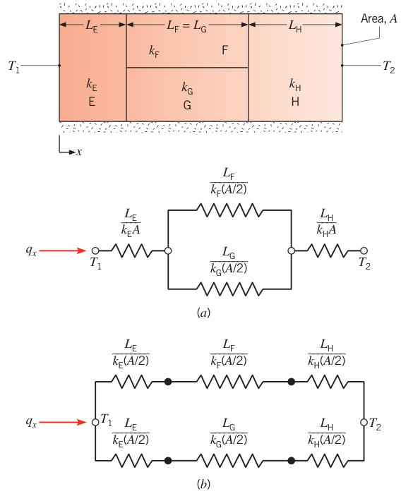
3.1.4 接触热阻#
此前一直忽略的一件事：复合系统中，材料交界面两侧可能有可观的温降。这就是接触热阻（thermal contact resistance）\(R_{t,c}\)。图 3.4 画出了它的效果，对单位界面面积定义：
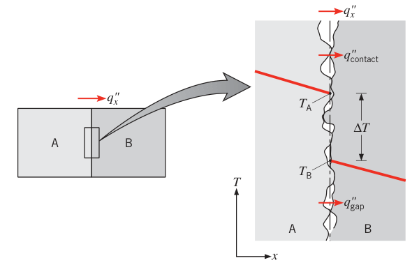
接触热阻的根源主要是表面粗糙度：接触点（contact spots）之间散布着间隙（gaps），多数情况下间隙里是空气。传热因此有两条并联路径——跨真实接触面积的导热、跨间隙的导热（和/或辐射）。接触面积通常很小，粗糙表面的情形下间隙贡献了大部分热阻。
对导热系数大于界面流体的固体，可以靠以下手段减小接触热阻：
- 增大接触点面积：加大结合压力、降低配合表面的粗糙度；
- 选用高导热系数的界面流体（填料）；
- 反过来，抽真空（无流体）会消灭间隙导热、增大接触热阻；间隙特征宽度 \(L\) 很小（极光滑表面）时，\(L/\lambda_{\mathrm{mfp}}\) 进入微纳尺度区间，间隙气体的导热系数还会被微尺度效应进一步压低（2.2 节）。
理论模型有，但最可靠的还是实验数据。表 3.1a 给出真空条件下金属界面的接触热阻随压力的变化，表 3.1b 给出铝界面配不同界面流体的效果。
表 3.1 接触热阻典型值
(a) 真空条件下的金属界面
| 界面材料 | \(10^5\ \mathrm{N/m^2}\) 压力 | \(10^7\ \mathrm{N/m^2}\) 压力 |
|---|---|---|
| 不锈钢 | 6–25 | 0.7–4.0 |
| 铜 | 1–10 | 0.1–0.5 |
| 镁 | 1.5–3.5 | 0.2–0.4 |
| 铝 | 1.5–5.0 | 0.2–0.4 |
(b) 铝界面（表面粗糙度 \(10\ \mu\mathrm{m}\)，(105 \mathrm{N/m2}\））配不同界面流体
| 界面流体 | \(R_{t,c}''\ [10^{-4}\ \mathrm{m^2 \cdot K/W}]\) |
|---|---|
| 空气 | 2.75 |
| 氦气 | 1.05 |
| 氢气 | 0.720 |
| 硅油 | 0.525 |
| 甘油 | 0.265 |
实际应用更常见的是异种固体接触、以及各种填料（interstitial filler）。凡能填进间隙且导热系数大于空气的物质都能减小接触热阻。两类最合适的材料：软金属（铟、铅、锡、银，可做成薄箔或镀层）与导热脂（thermal grease，硅基，能完全填满缝隙，导热系数最高约为空气的 50 倍）。
表 3.2 典型固体/固体界面的接触热阻
| 界面 | \(R_{t,c}''\ [10^{-4}\ \mathrm{m^2 \cdot K/W}]\) |
|---|---|
| 硅芯片/研磨铝，空气中（27–500 kN/m²） | 0.3–0.6 |
| 铝/铝 + 铟箔填料（约 100 kN/m²） | 约 0.07 |
| 不锈钢/不锈钢 + 铟箔填料（约 3500 kN/m²） | 约 0.04 |
| 铝/铝 + 金属铅镀层 | 0.01–0.1 |
| 铝/铝 + Dow Corning 340 导热脂（约 100 kN/m²） | 约 0.07 |
| 不锈钢/不锈钢 + Dow Corning 340 导热脂（约 3500 kN/m²） | 约 0.04 |
| 硅芯片/铝 + 0.02 mm 环氧 | 0.2–0.9 |
| 黄铜/黄铜 + 15 µm 锡焊料 | 0.025–0.14 |
与上述"非永久"界面不同，很多界面是永久粘接接头：环氧、富铅软焊料或金/锡合金硬焊料。由于母材与粘接材料之间也存在界面热阻，接头的实际热阻大于按粘接层厚度与导热系数算出的理论值 \(L/k\)；环氧与焊接接头还会因制造缺陷或热循环产生的空洞、裂纹而进一步恶化。
3.1.5 多孔介质#
许多应用中传热发生在多孔介质（porous medium）里——静止固体与流体的组合体。流体是气体或液体时称饱和（saturated）多孔介质；固、液、气三相共存称非饱和（unsaturated）。粉末床、隔热系统、纳米流体（2.2.1 节）都是例子。固体静止、流体可流动的饱和多孔介质叫填充床（packed bed），见 7.8 节。
图 3.5a：饱和多孔介质两端面温度 \(T_1\)（\(x=0\)）与 \(T_2\)（\(x=L\)）。稳态且 \(T_1 > T_2\) 时热流量可写为
\(k_{eff}\) 是有效导热系数（effective thermal conductivity）。式 (3.21) 成立的前提：介质内流体运动与辐射均可忽略。\(k_{eff}\) 取决于孔隙率（porosity，或 void fraction）\(\varepsilon\)——流体体积占总（固体+流体）体积之比——以及两相各自的导热系数（这里设 \(k_s > k_f\)）、固相几何细节（颗粒尺寸分布与堆积方式）、颗粒间接触热阻，甚至纳米尺度效应。精确预测很难，但可以夹逼：
- 串联模型（图 3.5b）：介质等效为"长 \(\varepsilon L\) 的流体层 + 长 \((1-\varepsilon)L\) 的固体层"的串联复合壁（无对流，\(h_1 = h_2 = \infty\)，只剩两段导热）：
与式 (3.21) 对照得下限：
- 并联模型（图 3.5c）：介质等效为"宽 \(\varepsilon w\) 的流体区 + 宽 \((1-\varepsilon)w\) 的固体区"的并联复合壁：
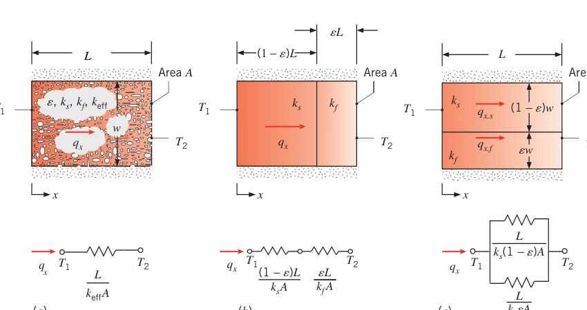
更精确的表达：Maxwell 给出了"互连固体基体中均匀分散、互不接触的球形 inclusion"的有效电导率公式，借用热–电类比（式 3.6 与 3.7 的对应）可得饱和多孔介质的有效导热系数：
适用条件：孔隙率较小（\(\varepsilon \lesssim 0.25\)）。它等价于例 2.2 中"流体里掺稀疏固体颗粒"的表达式，只是固、液角色互换。
还要注意 \(k_{eff}\) 的方向依赖性：图 3.5b、c 的模型显然在 \(x\) 方向与竖直方向给出不同的 \(k_{eff}\)，不是各向同性的。对各向同性介质，上下限都由式 (3.25) 型的互连高导热固相（最大）与"流体相形成长而随机取向的指状通道"（最小）给出；式 (3.23)、(3.24) 用在 isotropic 介质上会高估可能的取值范围。
【例 3.1】气凝胶运动服：要多厚才能把散热压到 100 W
已知（Known）：例 1.7 算过人体在空气与水中（环境 10°C）的散热。现在给人穿上纳米结构二氧化硅气凝胶（nanostructured silica aerogel）保暖/湿式服，导热系数低至 \(k_{ins} = 0.014\ \mathrm{W/(m \cdot K)}\)，外表面发射率 \(\varepsilon = 0.95\)。皮肤/脂肪层内表面温度 \(T_i = 35^\circ\mathrm{C}\)、厚 \(L_{sf} = 3\ \mathrm{mm}\)、\(k_{sf} = 0.3\ \mathrm{W/(m \cdot K)}\)、面积 \(A = 1.8\ \mathrm{m^2}\)；空气 \(h = 2\ \mathrm{W/(m^2 \cdot K)}\)，水 \(h = 200\ \mathrm{W/(m^2 \cdot K)}\)，\(T_\infty = T_{sur} = 10^\circ\mathrm{C}\)。
求（Find）：把散热速率压到 100 W（典型代谢产热率）所需气凝胶厚度（空气与水两种环境），以及对应的皮肤温度。
示意图（Schematic）：
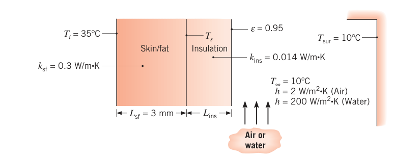
假设（Assumptions）：1. 稳态；2. 通过皮肤/脂肪层与保温层为一维导热；3. 接触热阻可忽略；4. 导热系数均匀；5. 皮肤面与大环境的辐射属"小表面对大封闭腔"，环境温度取气温；6. 液态水对热辐射不透明；7. 太阳辐射忽略；8. 第 2 问人体完全浸没。
分析（Analysis）：热路由皮肤/脂肪导热、保温层导热、以及外表面"对流 ∥ 辐射"的并联等效热阻串联而成（水侧 \(h_r = 0\)）：
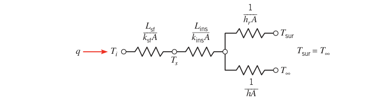
由式 (3.19) 求所需总热阻：
总热阻展开（对流、辐射并联合并成 \(1/(h + h_r)A\)）：
解出保温层厚度：
空气：取 \(h_r = 5.9\ \mathrm{W/(m^2 \cdot K)}\)（同例 1.7）：
水：\(h_r = 0\)，\(h = 200\ \mathrm{W/(m^2 \cdot K)}\)：
两种厚度都能轻松做进衣服里。皮肤温度由皮肤/脂肪层导热求出：
两种环境散热速率与皮肤/脂肪物性相同，所以皮肤温度相同。
点评（Comments）：
- 纳米结构气凝胶是只有约 5% 固体的多孔材料，其导热系数低于孔隙内气体的导热系数。看似不可能，原因在 2.2 节：孔径只有约 20 nm，把气体分子平均自由程压了下来，气体导热系数随之下降。
- 散热压到 100 W 后，人可以在冷环境中无限期待着而不觉得冷；34.4°C 的皮肤温度感觉舒适。
- 水环境中，保温层热阻占绝对主导，其余热阻都可以忽略。
- 空气侧 \(h\) 随风况在很宽的范围内变化，\(h\) 变则保温层外表面温度 \(T_{s,o}\) 变，\(h_r\)（依赖 \(T_{s,o}\)）也跟着变。完整分析要联立三式：\(h_r = \varepsilon\sigma(T_{s,o} + T_{sur})(T_{s,o}^2 + T_{sur}^2)\)、\(T_{s,o} = T_i - q[L_{sf}/k_{sf}A + L_{ins}/k_{ins}A]\)、\(L_{ins} = k_{ins}[AR_{\mathrm{tot}} - L_{sf}/k_{sf} - 1/(h + h_r)]\)。在 \(0 \le h \le 100\ \mathrm{W/(m^2 \cdot K)}\) 内求解：\(h\) 增大 → 对流热阻减小 → 需要更多保温；\(h\) 超过约 60 W/(m²·K) 后对流热阻已可忽略，再增大 \(h\) 对厚度几乎没有影响。\(h\) 从 0 到 100 时 \(T_{s,o}\) 从 294 K 降到 284 K，\(h_r\) 从 5.2 降到 4.9 W/(m²·K)——最初取的 \(h_r = 5.9\) 并不精确；用完整辐射模型、\(h = 2\) 时 \(h_r = 5.1\)，所需厚度 4.2 mm，与第一问的值接近。
【例 3.2】芯片会超温吗：接触热阻的保守估算
已知（Known）：薄硅芯片与 8 mm 厚铝基板之间由 0.02 mm 环氧粘接层连接。芯片与基板均为 10 mm 见方，暴露表面由 \(T_\infty = 25^\circ\mathrm{C}\) 的空气冷却，\(h = 100\ \mathrm{W/(m^2 \cdot K)}\)。芯片正常工况热流密度 \(q_c'' = 10^4\ \mathrm{W/m^2}\)。最高允许温度 \(85^\circ\mathrm{C}\)。
求（Find）：芯片是否会超过最高允许温度。
示意图（Schematic）：芯片（等温，热流密度 \(q_c''\)）— 环氧层 — 铝基板，上、下表面均对流散热；热路上芯片节点分出两条并联支路：直接对流 \(1/h\)，以及经 \(R_{t,c}'' + L/k + 1/h\) 的串联支路。
假设（Assumptions）：1. 稳态；2. 一维导热（复合体侧面换热可忽略）；3. 芯片自身导热热阻可忽略（等温芯片）；4. 物性为常数；5. 与环境的辐射换热可忽略。
物性（Properties）：表 A.1，纯铝（350 K）：\(k = 239\ \mathrm{W/(m \cdot K)}\)。
分析（Analysis）：芯片耗散的热，一部分直接从暴露表面对流带走，另一部分经粘接层与基板间接带走。对芯片做表面能量平衡（单位面积）：
两条支路的热流密度：
保守起见，\(R_{t,c}''\) 取表 3.2 中"硅芯片/铝 + 0.02 mm 环氧"的最大值 \(0.9 \times 10^{-4}\ \mathrm{m^2 \cdot K/W}\)。由 \(q_c'' = 10^4\ \mathrm{W/m^2}\) 解 \(T_c\)：
代入数值（\(L/k = 0.008/239 = 0.33 \times 10^{-4}\ \mathrm{m^2 \cdot K/W}\)，\(1/h = 100 \times 10^{-4}\ \mathrm{m^2 \cdot K/W}\)）：
芯片运行在最高允许温度以下。
点评（Comments）：
- 粘接层与基板的热阻远小于对流热阻。粘接层热阻得涨到不现实的 \(50 \times 10^{-4}\ \mathrm{m^2 \cdot K/W}\)，芯片才会超温。
- 允许耗散功率可以通过增大对流系数提高。取 \(T_c = 85^\circ\mathrm{C}\)、\(h\) 在 100–2000 W/(m²·K) 内扫描，\(q_c''\) 从约 \(10^4\) 升到约 \(2.5 \times 10^5\ \mathrm{W/m^2}\)；\(h \to \infty\) 时 \(q_2'' \to 0\)，几乎全部功率都直接交给流体。
- 空气 25°C 与芯片 75.3°C 之间的 50.3 K 是温差，等于 50.3°C。
- 若某侧气流被堵塞（该表面对流可忽略），芯片温度变为 126°C 或 125°C——任一侧失去冷却都会超温。
【例 3.3】光伏板的发电功率
已知（Known）：光伏板自上而下为：3 mm 掺铈玻璃（\(k_g = 1.4\ \mathrm{W/(m \cdot K)}\)）、0.1 mm 光学胶层（\(k_a = 145\ \mathrm{W/(m \cdot K)}\)）、极薄的硅发电层、0.1 mm 焊料层（\(k_{sdr} = 50\ \mathrm{W/(m \cdot K)}\)）、2 mm 氮化铝基板（\(k_{an} = 120\ \mathrm{W/(m \cdot K)}\)）。硅层光电转换效率随温度下降：\(\eta = a - bT_{si}\)，\(a = 0.553\)，\(b = 0.001\ \mathrm{K^{-1}}\)（\(T_{si}\) 用开尔文，300 K \(\le T_{si} \le\) 525 K）。太阳辐照 \(G = 700\ \mathrm{W/m^2}\)：7% 被玻璃顶面反射，10% 被玻璃顶面吸收，83% 透射并被硅层吸收。玻璃发射率 \(\varepsilon = 0.90\)；底面与四周绝热。板长 \(L = 1\ \mathrm{m}\)、宽 \(w = 0.1\ \mathrm{m}\)；\(h = 35\ \mathrm{W/(m^2 \cdot K)}\)，\(T_\infty = T_{sur} = 20^\circ\mathrm{C}\)。
求（Find）：光伏板的电功率 \(P\)。
示意图（Schematic）：热路上硅层节点有三条通道：发电支路（\(0.83\eta GLw\)）、向下导热为零（底面绝热）、向上经胶层与玻璃到顶面节点；顶面节点再经对流 \(1/hLw\) 与辐射 \(1/h_rLw\) 并联散出，同时顶面还吸收 \(0.10GLw\)。
假设（Assumptions）：1. 稳态；2. 一维传热；3. 物性为常数；4. 接触热阻可忽略；5. 硅层内温差可忽略。
分析（Analysis）：底面绝热，没有热流穿过焊料层与氮化铝基板——由傅里叶定律，这两层内没有温度梯度，稳态下 \(T_{sdr} = T_{an} = T_{si}\)，它们不进入分析。全部被吸收的太阳能最终只能以顶面对流、辐射和电功率三条路离开。对硅层节点做能量平衡：
代入 \(\eta = a - bT_{si}\) 化简：
对玻璃顶面节点做能量平衡：
代入 \(\eta\) 化简：
式 (1)、(2) 联立（试差或方程求解器）解得
转换效率 \(\eta = 0.553 - 0.001\ \mathrm{K^{-1}} \times 307\ \mathrm{K} = 0.247\)。电功率：
点评（Comments）：
- 正确应用能量守恒是关键：太阳能同时转换成热能与电能，而热路只量化热能的输运。
- 底面绝热意味着焊料层与基板完全不用进分析——无导热即无温度梯度。
- \(h\) 增大 → 硅温降低 → 效率升高 → 电功率增大：\(h = 15\) 与 \(55\ \mathrm{W/(m^2 \cdot K)}\) 时 \(P = 13.6\ \mathrm{W}\) 与 \(14.6\ \mathrm{W}\)。
- 用便宜的反光镜/透镜把阳光汇聚到贵的光伏板上可以降成本，但热管理变得更关键：把 \(G\) 汇聚到 \(7000\ \mathrm{W/m^2}\)，即使 \(h = 55\)，\(T_{si}\) 升到 119°C、效率掉到 0.160。聚光光伏的瓶颈就是冷却技术。
【例 3.4】碳纳米管导热系数测量
已知（Known）：直径 \(D = 14\ \mathrm{nm}\) 的碳纳米管架在两块 \(10\ \mu\mathrm{m} \times 10\ \mu\mathrm{m}\)、厚 \(0.5\ \mu\mathrm{m}\) 的方形"岛"之间，岛间距 \(s = 5\ \mu\mathrm{m}\)；整台测量装置是 \(T_\infty = 300\ \mathrm{K}\) 的氮化硅圆片。加热岛上的铂电阻膜耗散 \(q = 11.3\ \mu\mathrm{W}\)；感测岛上的铂膜用来测温（测电压、电流得电阻 \(R(T_s) = E/I\)，再由铂电阻–温度关系得 \(T_s\)）。每块岛由两根 \(L_{sn} = 250\ \mu\mathrm{m}\) 长、\(w_{sn} = 3\ \mu\mathrm{m}\) 宽、\(t_{sn} = 0.5\ \mu\mathrm{m}\) 厚的氮化硅悬梁支撑，梁内嵌 \(w_{pt} = 1\ \mu\mathrm{m}\) 宽、\(t_{pt} = 0.2\ \mu\mathrm{m}\) 厚的铂线。实验在真空（\(T_{sur} = 300\ \mathrm{K}\)）中进行，稳态时 \(T_s = 308.4\ \mathrm{K}\)。
求（Find）：碳纳米管的导热系数。
示意图（Schematic）：加热岛（\(T_h\)）— 碳纳米管（长 \(s\)）— 感测岛（\(T_s\)），两岛各经两根悬梁接到 \(T_\infty\) 的基体；热路上 \(q\) 从加热岛分三路：两根悬梁（各 \(R_{t,sup}\)）与纳米管，感测岛同样两根悬梁接地。
假设（Assumptions）：1. 稳态；2. 一维传热；3. 加热岛与感测岛等温；4. 表面辐射可忽略；5. 对流损失可忽略；6. 铂信号线上欧姆加热可忽略；7. 物性为常数；8. 纳米管与岛之间接触热阻可忽略。
物性（Properties）：表 A.1，铂（325 K）：\(k_{pt} = 71.6\ \mathrm{W/(m \cdot K)}\)；表 A.2，氮化硅（325 K）：\(k_{sn} = 15.5\ \mathrm{W/(m \cdot K)}\)。
分析（Analysis）：加热岛耗散的能量经悬梁、碳纳米管、感测岛悬梁流向基体。热路：
每根悬梁的热阻由氮化硅与铂线并联组成。截面积：
单根悬梁热阻：
感测岛两根悬梁合计漏热：
于是加热岛流入纳米管的热量与加热岛温度：
对 \(T_h\) 到 \(T_s\) 之间的一段：
解出：
点评（Comments）：
- 测得的导热系数极大——对照图 2.4 的纯金属即可看出。碳纳米管可以用来"掺杂"低导热材料以强化传热。
- 纳米尺度下的接触热阻所知甚少，故忽略；若计入，测得的导热系数只会更高。
- 辐射量级估算：把加热岛当黑体，上、下两面对 \(T_{sur}\) 辐射，\(q_{rad,b} \approx 5.67 \times 10^{-8} \times 2 \times (10 \times 10^{-6})^2 \times (332.6^4 - 300^4)\ \mathrm{W} = 4.7 \times 10^{-8}\ \mathrm{W} = 0.047\ \mu\mathrm{W}\)——可忽略。
3.2 另一类导热分析#
3.1 节用的是标准流程：解热方程 → 温度分布 → 傅里叶定律。还有一条另一类分析（alternative conduction analysis）路线。看图 3.6：稳态、无内热源、侧面无热损失时，能量守恒要求 \(q_x\) 是与 \(x\) 无关的常数——对任意微元 \(dx\) 都有 \(q_x = q_{x+dx}\)。这个结论即使面积随位置变化 \(A(x)\)、导热系数随温度变化 \(k(T)\) 依然成立；虽然温度分布严格说是二维的（\(x\)、\(y\) 都变），但工程上通常可以忽略 \(y\) 方向变化、按一维处理。
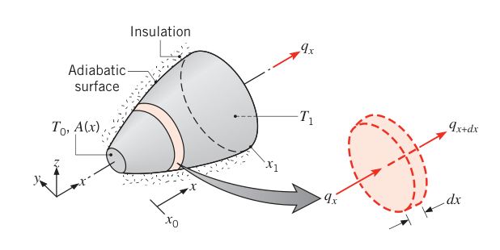
既然 \(q_x\) 恒定，傅里叶定律可以直接积分——哪怕 \(q_x\) 和 \(T(x)\) 都还不知道。对图 3.6 的系统：
从温度已知的点 \(x_0\)（温度 \(T_0\)）积分到任意 \(x\)，得到 \(T(x)\) 的函数形式；若另一处 \(x_1\) 的温度 \(T_1\) 也已知，则在 \(x_0\) 到 \(x_1\) 之间积分得到可解出 \(q_x\) 的方程。若 \(A\) 均匀、\(k\) 与温度无关，退化为
\(\Delta x = x_1 - x_0\)，\(\Delta T = T_1 - T_0\)。
能用积分形式的条件要刻在脑子里：稳态、一维、无内热源。
【例 3.5】圆锥台的温度分布与热流量
已知（Known）：热解陶瓷（pyroceram）圆截面锥台，直径 \(D = ax\)，\(a = 0.25\)。小端 \(x_1 = 50\ \mathrm{mm}\)、\(T_1 = 400\ \mathrm{K}\)；大端 \(x_2 = 250\ \mathrm{mm}\)、\(T_2 = 600\ \mathrm{K}\)；侧面绝热良好。
求（Find）：1. 一维条件下的温度分布 \(T(x)\)（符号形式）并画草图；2. 通过锥台的热流量 \(q_x\)。
示意图（Schematic）：锥台小端朝 \(x\) 正方向左侧，侧面画绝热纹理，\(q_x\) 沿轴向。
假设（Assumptions）：1. 稳态；2. 沿 \(x\) 一维导热；3. 无内热源；4. 物性为常数。
物性（Properties）：表 A.2，热解陶瓷（500 K）：\(k = 3.46\ \mathrm{W/(m \cdot K)}\)。
分析（Analysis）：
- 稳态、一维、无生成 → \(q_x\) 恒定，直接用傅里叶定律：
分离变量：
从 \(x_1\) 积分到任意 \(x\)（\(q_x\)、\(k\) 均为常数）：
解出温度分布：
代入数值即得分布曲线。注意由傅里叶定律 \(dT/dx = -4q_x/(k\pi a^2x^2)\)：温度梯度与热流密度都随 \(x\) 增大而减小（截面积越来越大）。
- \(q_x\) 还未知，把 \(T(x_2) = T_2\) 代入上式：
代数：
负号表示热流沿 \(-x\) 方向：大端热、小端冷，热从大端流向小端。
点评（Comments）：\(a\) 越大，截面积随距离变化越快，一维假设越不合适。
3.3 径向系统#
圆柱与球系统常常只在径向存在温度梯度，可以按一维处理。稳态、无生成时既可以用标准方法（从热方程出发），也可以用另一类方法（从傅里叶定律出发）。本节圆柱用标准方法、球壁用另一类方法各演示一遍。
3.3.1 圆筒壁#
典型场景：内、外表面分别接触两种温度流体的圆筒壁（图 3.7）。稳态、无生成时热方程取式 (2.26) 的形式（暂设 \(k\) 可变）：
配上傅里叶定律读出物理：穿过任意半径 \(r\) 处圆柱面的导热速率为
\(A = 2\pi rL\) 是垂直于传热方向的面积。式 (3.28) 说明 \(kr\,dT/dr\) 与 \(r\) 无关，于是由式 (3.29)：径向导热中热流量 \(q_r\)（不是热流密度 \(q_r''\)）是常数。
设 \(k\) 为常数，式 (3.28) 积分两次得通解：
边界条件 \(T(r_1) = T_{s,1}\)、\(T(r_2) = T_{s,2}\)，定出常数后代回：
圆筒壁的温度分布是对数曲线，不是平壁的直线（图 3.7 内嵌小图）。
分布代入傅里叶定律（式 3.29）得热流量：
对照热阻定义：
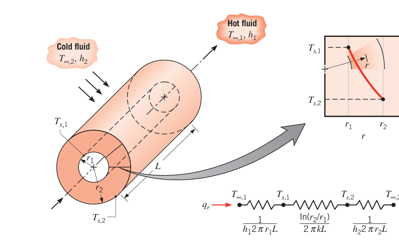
复合圆筒（图 3.8，忽略界面接触热阻）照搬平壁复合壁的做法：
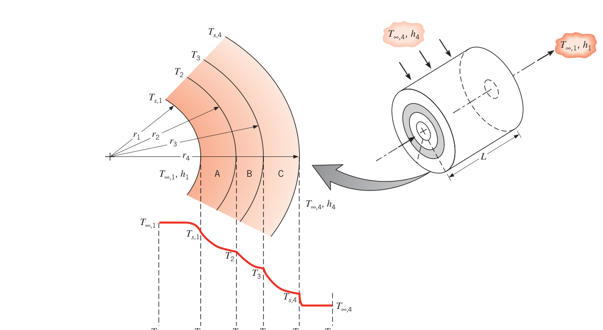
总传热系数可以定义在任意面积上。取内侧面积 \(A_1 = 2\pi r_1 L\)：
定义是任意的——也可以取 \(A_4\) 或任何中间面积。注意：
【例 3.6】有没有"最佳保温层厚度"：临界绝热半径
已知（Known）：径向系统加保温层时有两个相反的效应——导热热阻随厚度增大，而对流热阻因外表面面积增大而减小。也许存在一个使总热阻最大（散热最小）的保温层厚度？用两个具体问题裁决。1. 薄壁铜管半径 \(r_i\)，管内低温制冷剂，管温 \(T_i\) 低于环境气温 \(T_\infty\)。给管子加保温层有没有最佳厚度？2. 用直径 10 mm 的管子、泡沫玻璃（cellular glass）保温、外表面 \(h = 5\ \mathrm{W/(m^2 \cdot K)}\)，对保温厚度 0、2、5、10、20、40 mm 计算单位管长总热阻验证。
求（Find）：1. 是否存在使散热最小的保温厚度；2. 不同保温厚度下的总热阻。
示意图（Schematic）：管（\(T_i\)）外包保温层（\(k\)，外半径 \(r\)），热路为导热热阻与对流热阻串联。
假设（Assumptions）：1. 稳态；2. 径向（圆柱）一维传热；3. 管壁热阻可忽略；4. 保温层物性为常数；5. 保温层外表面与环境的辐射可忽略。
物性（Properties）：表 A.3，泡沫玻璃（285 K）：\(k = 0.055\ \mathrm{W/(m \cdot K)}\)。
分析（Analysis）：
- 制冷剂到空气之间的热阻由保温层导热与空气对流主导（式 3.33 与 3.9），单位管长：
散热速率 \(q' = (T_\infty - T_i)/R_{\mathrm{tot}}'\)。最佳厚度对应使 \(R_{\mathrm{tot}}'\) 最大的 \(r\)，令 \(dR_{\mathrm{tot}}'/dr = 0\)：
判断极大还是极小要算二阶导：
二阶导恒正：\(r = k/h\) 是总热阻的最小值点，不是最大值点。所以"最佳保温厚度"不存在。正确的概念是临界绝热半径（critical insulation radius）
它使换热最大：\(r < r_{cr}\) 时加厚保温散热反而增大，\(r > r_{cr}\) 后才转降。
- \(h = 5\ \mathrm{W/(m^2 \cdot K)}\)、\(k = 0.055\ \mathrm{W/(m \cdot K)}\)：
\(r_{cr} > r_i = 0.005\ \mathrm{m}\)：加保温会使散热增大，直到保温层外半径达到 \(r_{cr}\)，对应厚度 \(r_{cr} - r_i = 6\ \mathrm{mm}\)。对给定厚度逐一算 \(R_{\mathrm{tot}}'\)：导热热阻随厚度对数上升，对流热阻按 \(1/r\) 下降，总热阻曲线在 \(r = r_{cr}\) 附近出现凹谷。
点评（Comments）：
- 临界半径的效应：即使加了 20 mm 保温，总热阻仍小于不保温时的值。
- \(r_i < r_{cr}\) 时（本题情形）：加保温先增大散热——这对电线是好事，电绝缘层帮忙把线内焦耳热带出去；反之 \(r_i > r_{cr}\) 时加保温必然减散热——蒸汽管正是想要的情形。
- "保温反增散热"只出现在小直径管线 + 小换热系数的组合下。典型保温材料 \(k \approx 0.03\ \mathrm{W/(m \cdot K)}\)、空气自然对流 \(h \approx 10\ \mathrm{W/(m^2 \cdot K)}\)，\(r_{cr} = k/h \approx 0.003\ \mathrm{m}\)——工程上通常 \(r_i \gg r_{cr}\)，不必操心。
- 临界半径存在的必要条件是传热面积沿传热方向变化（圆柱、球）；平壁的传热面积是常数，没有临界保温厚度——总热阻永远随厚度增大。
3.3.2 球壁#
对图 3.9 的空心球用另一类方法。微元控制体能量守恒（稳态、一维、无生成）要求 \(q_r = q_{r+dr}\)。傅里叶定律：
\(A = 4\pi r^2\)。\(q_r\) 恒定，写成积分形式：
常数 \(k\) 时：
热阻按"温差除以热流量"：
温度分布与式 (3.40)、(3.41) 用标准方法（热方程）同样能得到。复合球体照搬复合壁与复合圆筒的处理。
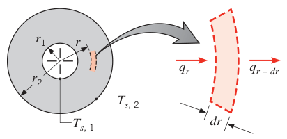
拓展：球壁与圆筒壁热阻的极限行为
对数与倒数的差别在 \(r_2 \to \infty\) 时最直观：圆筒壁热阻 \(\ln(r_2/r_1)/2\pi Lk\) 随外径对数发散——保温层再厚也"绝缘不到底"；球壁热阻 \((1/r_1 - 1/r_2)/4\pi k\) 当 \(r_2 \to \infty\) 时收敛到 \(1/4\pi kr_1\)——给球体包裹足够厚的壳层，向外的散热有硬上限。埋地球罐、深埋发热体的散热设计用的正是这条极限性质。
3.4 一维导热结果汇总#
很多重要问题都是"平壁、圆筒壁、球壁 + 一维稳态 + 无内热源"。表 3.3 把三种几何的关键结果排在一起，其中 \(\Delta T = T_{s,1} - T_{s,2}\) 为内、外表面温差（对应图 3.1、3.7、3.9 的标记）。要求：从热方程出发，能自己推出每种几何的温度分布、热流密度、热流量与热阻。
表 3.3 无内热源一维稳态导热解汇总（原表 3.3 重排）
| 项目 | 平壁 | 圆筒壁 | 球壁 |
|---|---|---|---|
| 热方程 | \(\dfrac{d^2T}{dx^2} = 0\) | \(\dfrac{1}{r}\dfrac{d}{dr}\left(r\dfrac{dT}{dr}\right) = 0\) | \(\dfrac{1}{r^2}\dfrac{d}{dr}\left(r^2\dfrac{dT}{dr}\right) = 0\) |
| 温度分布 | \(T_{s,1} - \Delta T\dfrac{x}{L}\) | \(T_{s,2} + \Delta T\dfrac{\ln(r/r_2)}{\ln(r_1/r_2)}\) | \(T_{s,1} - \Delta T\left[\dfrac{1 - (r_1/r)}{1 - (r_1/r_2)}\right]\) |
| 热流密度 \(q''\) | \(\dfrac{k\Delta T}{L}\) | \(\dfrac{k\Delta T}{r\ln(r_2/r_1)}\) | \(\dfrac{k\Delta T}{r^2[(1/r_1) - (1/r_2)]}\) |
| 热流量 \(q\) | \(\dfrac{kA\Delta T}{L}\) | \(\dfrac{2\pi Lk\Delta T}{\ln(r_2/r_1)}\) | \(\dfrac{4\pi k\Delta T}{(1/r_1) - (1/r_2)}\) |
| 导热热阻 \(R_{t,\mathrm{cond}}\) | \(\dfrac{L}{kA}\) | \(\dfrac{\ln(r_2/r_1)}{2\pi Lk}\) | \(\dfrac{(1/r_1) - (1/r_2)}{4\pi k}\) |
注：临界绝热半径，圆柱 \(r_{cr} = k/h\)，球 \(r_{cr} = 2k/h\)。
读这张表的三个要点：圆筒与球壁的 \(q''\) 都随 \(r\) 变（面积在变），\(q\) 不随 \(r\) 变；温度分布形状分别是线性、对数、\(1/r\) 型；球的临界半径是圆柱的两倍。
3.5 含热生成的一维导热#
前面所有场景的温度分布都只由边界条件决定。现在加入介质内部的能量转换——热生成（thermal energy generation）。
最常见的生成过程是载流介质中的电–热转换（欧姆加热，也叫电阻加热、焦耳加热）。电流 \(I\) 通过电阻 \(R_e\) 的生成速率：
若该功率（W）在体积 \(V\) 内均匀发生，体积生成率（volumetric generation rate，W/m³）：
其他生成机制：核反应堆燃料元件中中子的减速与吸收；介质内的放热化学反应（吸热反应则是热汇，把热能转成化学键能）；介质对辐射的吸收（伽马射线被反应堆包壳、热屏蔽、压力容器等外部部件吸收；可见光被半透明介质吸收）。切记：生成不是贮存（1.3.1 节）——生成是其他能量形式在体内转换成热能，贮存是热能存量的变化。
3.5.1 平壁#
图 3.10a：平壁内均匀生成（\(\dot q\) 为常数），两表面维持 \(T_{s,1}\) 与 \(T_{s,2}\)。常数 \(k\) 时热方程取式 (2.22)：
通解：
边界条件 \(T(-L) = T_{s,1}\)、\(T(L) = T_{s,2}\)，定出 \(C_1 = (T_{s,2} - T_{s,1})/2L\)、\(C_2 = \frac{\dot q}{2k}L^2 + (T_{s,1} + T_{s,2})/2\)，代回：
分布代入傅里叶定律可得任意点的热流密度——注意有生成时热流密度不再与 \(x\) 无关。
两表面同温（\(T_{s,1} = T_{s,2} = T_s\)）时分布关于中面对称（图 3.10b）：
最大温度在中面上：
无量纲形式：
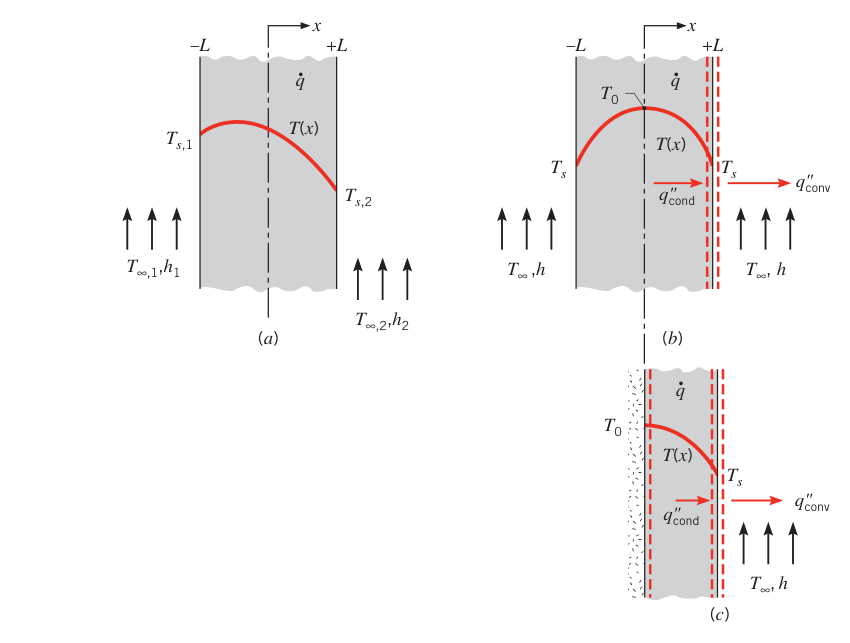
关键观察：对称面（\(x=0\)）处温度梯度为零，\(d(T/dx)|_{x=0} = 0\)，没有热量穿越该面——它就是图 3.10c 的绝热面。推论：式 (3.47) 同样适用于"一侧完全绝热（\(x=0\)）、另一侧维持 \(T_s\)（\(x=L\)）"的平壁——厚 2L 的对称壁与厚 L 的单侧绝热壁是同一个问题。
要用式 (3.47)，得先知道表面温度 \(T_s\)；但常见情形是已知相邻流体温度 \(T_\infty\)。用表面能量平衡把两者挂钩。对图 3.10b 的 \(x=L\) 表面（或图 3.10c 的表面），忽略辐射，式 (1.13) 化为
由式 (3.47) 求出 \(x=L\) 处的梯度代入，得
这个结果也能用总体能量平衡直接得到：对包围壁体的控制面，式 (1.12c) 退化为
单位表面积：
解出 \(T_s\) 即式 (3.51)。把式 (3.51) 代回式 (3.47) 消掉 \(T_s\)，分布就完全用已知量 \(\dot q, L, k, h, T_\infty\) 表达。
拓展：发热层的名义热阻还能用吗
严格讲发热层画不进热阻电路，但工程上仍常用"按总温差定义的名义热阻"做快速预算：对称平壁取 \((T_0 - T_\infty)/q'' = L/2k + 1/h\)（式 3.47 与 3.51 的组合），例 3.2 的芯片结温预算也是这个思路。区别在于：名义热阻只在给定工况下是常数，\(\dot q\) 一变它就不再是纯粹的几何比——芯片厂商数据手册里的结–壳热阻都要注明测试条件，原因就在这。
【例 3.7】发电材料 A 叠无生成材料 B 的复合壁
已知（Known）：平壁由材料 A、B 复合而成。A 层有均匀生成 \(\dot q = 1.5 \times 10^6\ \mathrm{W/m^3}\)，\(k_A = 75\ \mathrm{W/(m \cdot K)}\)，\(L_A = 50\ \mathrm{mm}\)；B 层无生成，\(k_B = 150\ \mathrm{W/(m \cdot K)}\)，\(L_B = 20\ \mathrm{mm}\)。A 的内表面绝热，B 的外表面被水流冷却，\(T_\infty = 30^\circ\mathrm{C}\)，\(h = 1000\ \mathrm{W/(m^2 \cdot K)}\)。
求（Find）：1. 画出稳态温度分布草图；2. 绝热面温度 \(T_0\) 与冷却面温度 \(T_2\)。
示意图（Schematic）：
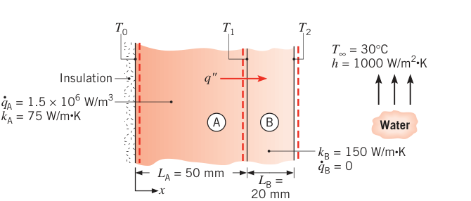
假设（Assumptions）：1. 稳态；2. \(x\) 方向一维导热；3. 层间接触热阻可忽略；4. A 内表面绝热；5. A、B 物性为常数。
分析（Analysis）：
-
分布特征由物理条件直接读出：(a) A 层内为抛物线；(b) 绝热边界处斜率为零；© B 层内为直线；(d) 界面处斜率突变，比值 \(= k_B/k_A = 2\)；(e) 水侧靠近表面处梯度很大。
-
先求外表面温度 \(T_2\)。对材料 B 的控制体做能量平衡：B 内无生成，稳态下进入 B 的热流密度等于表面对流带走的热流密度：
再求绝热面温度 \(T_0\)。由式 (3.48)（单侧绝热情形）：
\(T_1\) 用热路求：热流从界面 \(T_1\) 依次经过 B 层导热热阻与对流热阻到达 \(T_\infty\)：
点评（Comments）：
- 有热生成的材料 A 不能画成热路里的一个电阻元件——热流在 A 内不是常数。
- 对流热阻远大于 B 层导热热阻（\(R_{\mathrm{conv}}''/R_{\mathrm{cond},B}'' = 7.5\)），所以表面到流体的温差远大于 B 层内的温降：\((T_2 - T_\infty)/(T_1 - T_2) = 7.5\)，与分布图一致。
- \(T_0\)、\(T_1\)、\(T_2\) 都依赖 \(\dot q\)、\(k_A\)、\(k_B\)、\(h\)。每种材料都有最高允许运行温度。对比 \(h = 200\)（风冷）与 \(1000\ \mathrm{W/(m^2 \cdot K)}\)（液冷）的分布：\(h = 200\) 时全系统温度大幅抬升，可能热失效。注意 \(x = 50\ \mathrm{mm}\) 界面处 \(dT/dx\) 有轻微不连续——物理根源是两种材料导热系数不同（斜率比 \(k_B/k_A = 2\)）；若界面存在接触热阻，该处还会出现温度的突降。
- 提高 \(\dot q\)、减小 \(k_A\) 或 \(k_B\) 都会抬高整条分布曲线。
3.5.2 径向系统#
生成可以出现在各种径向几何里。图 3.11：长实心圆柱（通电导线、核燃料棒）。稳态时柱内生成速率等于表面对流带走速率，表面得以维持固定温度 \(T_s\)。
常数 \(k\) 时热方程取式 (2.26)：
分离变量、均匀生成，积分一次：
再积分得通解：
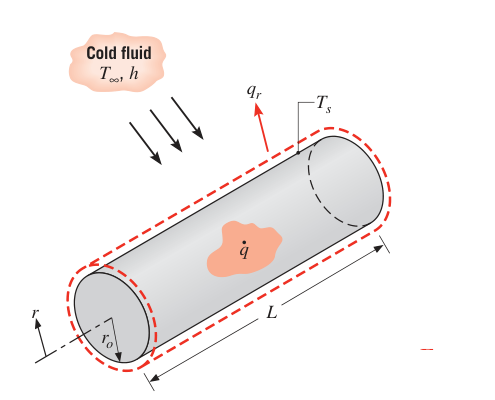
边界条件：中心对称 \(dT/dr|_{r=0} = 0\)，表面 \(T(r_o) = T_s\)。由对称条件与式 (3.55) 得 \(C_1 = 0\)；代入表面条件：
温度分布：
在中心线取值并与式 (3.58) 相除，得无量纲分布：
\(T_o\) 是中心线温度。任意半径处的热流量用式 (3.58) 配傅里叶定律即得。
表面温度与冷流体温度 \(T_\infty\) 的关系用总体能量平衡：
【例 3.8】外绝热、内冷却的发热圆管
已知（Known）：长实心圆管，外半径 \(r_2\) 绝热，内半径 \(r_1\) 被冷却，管内均匀生成 \(\dot q\)（W/m³）。
求（Find）：1. 管内温度分布的通解；2. 若限定绝热面（\(r = r_2\)）最高温度为 \(T_{s,2}\)，给出定常数的边界条件、常数与温度分布；3. 单位管长排热速率；4. 冷却剂温度 \(T_\infty\) 已知时，内表面必须维持的对流系数表达式。
示意图（Schematic）：圆环管，外缘画绝热纹理，内缘对流冷却（\(T_\infty, h\)），分布从内表面 \(T_{s,1}\) 升到外表面 \(T_{s,2}\)。
假设（Assumptions）：1. 稳态；2. 一维径向导热；3. 物性为常数；4. 体积生成均匀；5. 外表面绝热。
分析（Analysis）：
- 热方程同式 (3.54)，通解即式 (3.56)——它对圆柱壳（空心管）同样成立：
- 两个边界条件都给在 \(r_2\) 上。温度上限：
绝热外表面（傅里叶定律）：
把式 (1) 代入通解：
把式 (2) 代入式 (3.55)：
代回式 (3)：
于是温度分布：
- 排热速率取 \(r_1\) 处的导热速率（单位管长）。傅里叶定律 \(q_r' = -k(2\pi r)dT/dr\)，代入式 (7) 并在 \(r_1\) 取值：
负号表示热流沿 \(-r\) 方向（向内表面流）。也可以直接用总体能量平衡：外表面绝热，生成速率等于内表面排热速率，\(\dot E_g = \dot q\pi(r_2^2 - r_1^2)L\)，\(\dot E_{\mathrm{out}} = q_{\mathrm{cond}}'L\)：
- 对内表面用式 (1.13)：
\(T_{s,1}\) 由式 (7) 在 \(r = r_1\) 处取值得到。
点评（Comments）：
- 第 3 问中傅里叶定律给出 \(q_r'(r_1)\) 为负——热流沿 \(-r\) 方向；而在能量平衡里我们把排热写成正值 \(q_{\mathrm{cond}}' = -q_r'(r_1)\)，对流项写成 \((T_{s,1} - T_\infty)\) 而不是 \((T_\infty - T_{s,1})\)。方向约定要前后一致。
- 数值演练：\(k = 5\ \mathrm{W/(m \cdot K)}\)，\(r_1 = 20\ \mathrm{mm}\)，\(r_2 = 25\ \mathrm{mm}\)，\(T_{s,2} = 350^\circ\mathrm{C}\)，\(\dot q = 5 \times 10^6\ \mathrm{W/m^3}\)，\(T_\infty = 80^\circ\mathrm{C}\)。由式 (7) 得 \(T_{s,1} = 336.5^\circ\mathrm{C}\)，代入式 (10) 得所需对流系数 \(h = 110\ \mathrm{W/(m^2 \cdot K)}\)。对三个 \(\dot q\) 值画出 \(T_{s,2}\) 随 \(h\) 的变化，即可读出把最高温度压在 350°C 以内所需的最小 \(h\)。
- 该分布也可用附录 C 的表列解得到：在 \(r=r_1\) 处用表面能量平衡，\(q(r) = \dot q\pi(r_2^2 - r_1^2)L\) 由式 C.8 定出，代入式 C.2 消去 \(T_{s,1}\)。
3.5.3 表列解#
附录 C 对"一维平壁/圆柱/球 + 均匀生成"的各种表面条件组合给出了系统化的表列解：第二类边界条件（均匀表面热流密度）与第三类边界条件（热流密度正比于 \(h\) 或总传热系数 \(U\)）下的温度、热流密度与热流量分布，直接查表即得。
3.5.4 热阻概念的适用性：一个警告#
有热生成时，热流量不再是与空间坐标无关的常数——此时 3.1 节与 3.3 节建立的导热热阻概念和相关热流量公式不能用。这是本章最容易踩的坑之一，例 3.7 点评 1 已演示。
3.6 扩展表面的传热#
扩展表面（extended surface）指这样一类特殊情形：固体内部有导热、固体边界同时对相邻流体对流（和/或辐射）换热，而边界上的传热方向垂直于固体内部导热的主方向——此前处理的平壁、圆筒都不是这样。图 3.12 的例子：连接两堵温度不同墙体的支撑杆，\(T_1 > T_2 > T_\infty\)，\(x\) 方向的温度梯度维持杆内导热，但沿途同时向流体对流散热，于是 \(q_x\) 与温度梯度 \(|dT/dx|\) 沿 \(x\) 不断衰减。
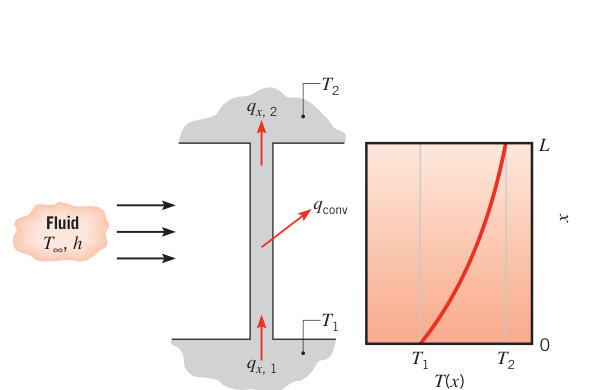
这类"导热–对流"复合问题最常见、最重要的应用，就是专门用来强化固体向流体散热的扩展表面——肋片（fin，也称翅片）。
什么时候需要肋片？看图 3.13：表面温度 \(T_s\) 固定时，加大散热有三条路：提高 \(h\)（增加流速）、降低 \(T_\infty\)、或者加大对流面积。前两条常常要么不够用、要么代价太高（提高 \(h\) 需要更大的风机/泵功），第三条就是装肋片——让表面延伸进流体里。肋片材料的导热系数强烈影响沿肋的温度分布：理想情况 \(k \to \infty\)，整根肋片都处于肋基温度，增强效果最大。
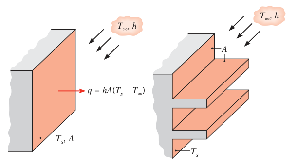
应用随手可举：摩托车与割草机的发动机缸盖散热鳍、电力变压器散热片、空调器里空气侧的翅片管（图 3.14）。
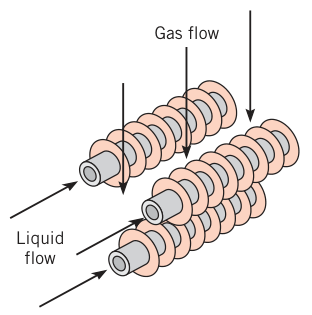
肋片的构型（图 3.15）：
- 直肋（straight fin）：装在平壁上的扩展表面，截面可以沿 \(x\) 不变（等截面）或变化（变截面）；
- 环肋（annular fin）：环向装在圆柱上，截面随半径变化；
- 针肋（pin fin，或 spine）：圆截面的扩展表面，也可等截面或变截面。
直肋与环肋多为矩形截面（面积 = 厚度 \(t\) × 宽度 \(w\) 或周长 \(2\pi r\)）。选型要看空间、重量、制造与成本，还要考虑肋片对表面换热系数的削弱和流动压降的增加。
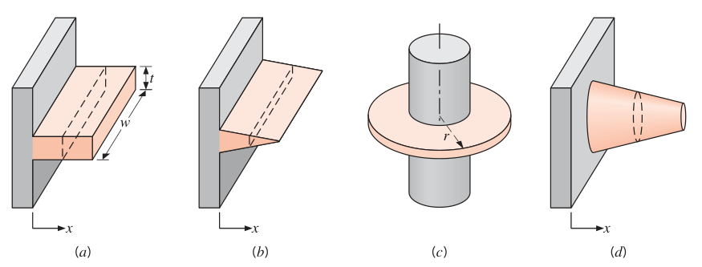
3.6.1 一般导热分析#
要量化肋片的散热，先求沿肋的温度分布。对图 3.16 的扩展表面做能量平衡，先立假设：一维（\(x\) 方向）——肋内导热严格说是二维的，但实际肋片很薄，横截面（\(y,z\) 方向）上的温度变化远小于"肋与环境的温差"，可以假设温度沿截面均匀、只是 \(x\) 的函数；稳态；导热系数恒定；表面辐射可忽略；无内热源；对流换热系数 \(h\) 在表面均匀。
对图 3.16 的微元应用式 (1.12c)：
由傅里叶定律：
\(A_c\) 是横截面积，可随 \(x\) 变化。\(x+dx\) 处的导热速率用泰勒展开：
对流散热：
\(dA_s\) 是微元的表面面积。代入能量平衡得肋片一般方程：
配上边界条件解出 \(T(x)\)，再代回式 (3.62) 就能算任意 \(x\) 处的导热速率。
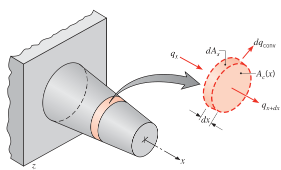
3.6.2 等截面肋片#
从最简单的情形入手：等截面的矩形直肋与针肋（图 3.17），肋基温度 \(T(0) = T_b\)，浸在温度 \(T_\infty\) 的流体中。
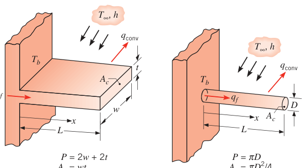
此时 \(A_c\) 为常数，表面积 \(A_s = Px\)（\(P\) 为截面周长），\(dA_c/dx = 0\)、\(dA_s/dx = P\)，式 (3.66) 简化为
引入过余温度（excess temperature）变换变量：
\(T_\infty\) 为常数，故 \(d\theta/dx = dT/dx\)。方程变成常系数线性齐次二阶方程：
通解：
第一个边界条件在肋基：
第二个条件给在肋端（\(x=L\)），按物理情形分四种。
情形 A：肋端对流。对围住肋端的控制面做能量平衡（图 3.18）：
即"肋端对流带走的热量 = 导热送到肋端的热量"。联立式 (3.72)、(3.73) 解出 \(C_1\)、\(C_2\)，整理得温度分布：
分布形状见图 3.18：温度梯度的模随 \(x\) 增大而减小——因为对流沿途持续抽走热量，\(q_x(x)\) 沿程衰减。
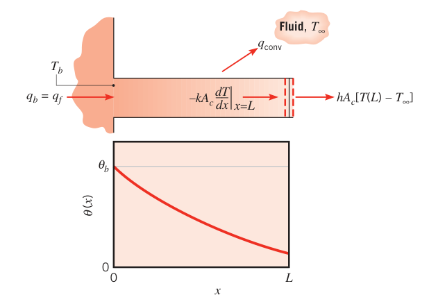
整个肋片的散热量 \(q_f\) 有两种算法，结果相同：简单的一种是在肋基用傅里叶定律（肋基导热量 = 全肋散热量）：
代入分布：
另一种是对全肋表面积分：
情形 B：肋端绝热。肋端对流损失可忽略时：
解出分布与散热：
其中 \(M \equiv \sqrt{hPkA_c}\,\theta_b\)。
情形 C：肋端温度给定。\(\theta(L) = \theta_L\)：
情形 D：无限长肋。\(L \to \infty\) 时 \(\theta_L \to 0\)：
表 3.4 等截面肋片的温度分布与散热（原表重排）
| 情形 | 肋端条件 \((x=L)\) | 温度分布 \(\theta/\theta_b\) | 散热速率 \(q_f\) |
|---|---|---|---|
| A | 对流：\(h\theta(L) = -k\,d\theta/dx\) | \(\dfrac{\cosh m(L-x) + (h/mk)\sinh m(L-x)}{\cosh mL + (h/mk)\sinh mL}\) | \(M\dfrac{\sinh mL + (h/mk)\cosh mL}{\cosh mL + (h/mk)\sinh mL}\) |
| B | 绝热：\(d\theta/dx = 0\) | \(\dfrac{\cosh m(L-x)}{\cosh mL}\) | \(M\tanh mL\) |
| C | 给定温度：\(\theta(L) = \theta_L\) | \(\dfrac{(\theta_L/\theta_b)\sinh mx + \sinh m(L-x)}{\sinh mL}\) | \(M\dfrac{\cosh mL - \theta_L/\theta_b}{\sinh mL}\) |
| D | 无限长肋（\(L \to \infty\)） | \(e^{-mx}\) | \(M\) |
注：\(\theta \equiv T - T_\infty\)，\(m^2 = hP/(kA_c)\)，\(\theta_b = \theta(0) = T_b - T_\infty\)，\(M = \sqrt{hPkA_c}\,\theta_b\)。双曲函数表见附录 B.1。
拓展：mL 是肋片的无量纲长度
\(m = \sqrt{hP/kA_c}\) 的倒数是肋片的特征热长度：\(h\) 越大、\(k\) 越小，特征长度越短，温度在越短的距离内跌到流体温度。\(mL\) 就是"以热长度量出的肋长"，表 3.4 四种情形的全部公式都由它一个参数控制：\(mL \lesssim 0.5\) 的短胖肋接近等温（\(\eta_f\) 高），\(mL \gtrsim 3\) 的细长肋远端已无贡献。设计上常把 \(mL\) 取在 1–2 之间，兼顾效率与材料用量。
【例 3.9】三种材料的"无限长"导棒
已知（Known）：直径 5 mm 的长棒，一端维持 \(T_b = 100^\circ\mathrm{C}\)，表面暴露于 \(T_\infty = 25^\circ\mathrm{C}\) 的空气，\(h = 100\ \mathrm{W/(m^2 \cdot K)}\)。材料分别为纯铜、2024 铝合金、AISI 316 不锈钢。
求（Find）：1. 三种棒的沿程温度分布与散热速率；2. 棒要长到多少，"无限长"假设才能给出准确的散热估计。
示意图（Schematic）：水平圆棒，左端 \(T_b\)，向右伸入空气，\(k\)、\(L \to \infty\)、\(D = 5\ \mathrm{mm}\)。
假设（Assumptions）：1. 稳态；2. 沿棒一维导热；3. 物性为常数；4. 辐射可忽略；5. 换热系数均匀；6. 棒无限长。
物性（Properties）：表 A.1，平均温度 \((100+25)/2 = 62.5^\circ\mathrm{C} \approx 335\ \mathrm{K}\)：纯铜 \(k = 398\ \mathrm{W/(m \cdot K)}\)；2024 铝合金 \(k = 180\ \mathrm{W/(m \cdot K)}\)；AISI 316 不锈钢 \(k = 14\ \mathrm{W/(m \cdot K)}\)。
分析（Analysis）：
- 无限长肋的分布由式 (3.84)：
三种材料的 \(m\) 分别为 14.2、21.2、75.6 m⁻¹。分布曲线显示：棒长超过约 300 mm（铜）、200 mm（铝合金）、50 mm（不锈钢）之后，再加长几乎不增加散热。散热由式 (3.85)：
铜：\(q_f = 8.3\ \mathrm{W}\)；铝合金：\(5.6\ \mathrm{W}\)；不锈钢：\(1.6\ \mathrm{W}\)。
- 无限长肋意味着肋端无散热。把式 (3.81) 与 (3.85) 对比：当 \(\tanh mL \approx 0.99\)，即 \(mL \approx 2.65\) 时两者等价。所以棒长满足
即可按无限长处理。铜：\(L_\infty = 0.19\ \mathrm{m}\)；铝合金：0.13 m；不锈钢：0.04 m。
点评（Comments）：
- \(mL \approx 2.65\) 保证散热量算得准；若要温度分布 \(T(x)\) 也准，要求肋端过余温度趋近于零：\(\theta(L)/\theta_b = e^{-mL} \lesssim 0.01\)，即 \(mL \gtrsim 4.6\)，对应 0.33、0.23、0.07 m——与第 1 问的分布曲线一致。
3.6.3 肋片性能#
肋片靠增大有效面积来强化散热，但肋片自身对原表面而言是一段导热热阻——装肋片并不保证散热一定增大。衡量这件事的指标是肋片效能（fin effectiveness）\(\varepsilon_f\)：肋片散热量与不装肋时（裸肋基面积）散热量之比：
\(A_{c,b}\) 是肋基横截面积。合理的设计要求 \(\varepsilon_f\) 尽量大；一般 \(\varepsilon_f \ge 2\) 才值得装肋。
对等截面肋，取无限长肋近似（情形 D），并假设加肋后表面对流系数与裸基相同（常用近似），得
几个重要趋势直接从式 (3.87) 读出：
- 选高导热系数材料：铝合金与铜优先；铜导热更好，但铝合金有成本与重量优势，实际更常用；
- 增大周长与截面积之比 \(P/A_c\)：薄而密排的肋片更优——但肋间隙不能小到阻碍流动、拉低 \(h\)；
- \(h\) 越小越该用肋：气体侧比液体侧更需要肋片，自然对流比强制对流更需要。气–液分界面的两侧，肋片装在气体侧（\(h\) 小的一侧）——汽车散热器的例子：空气侧（外表面）装翅片，水侧（内表面）不装。以 \(\varepsilon_f \ge 2\) 为判据，式 (3.87) 给出 \((kP/hA_c) \ge 4\)。
式 (3.87) 是 \(L \to \infty\) 的上限，但不必真做那么长：例 3.9 表明 \(mL \approx 2.65\) 就已拿到 99% 的最大散热量，肋长超过 \(L = 2.65/m\) 毫无意义。
原书笔误
本段原书写作"如例 3.8 所见，\(mL \approx 2.65\) 时达到最大散热速率的 99%"。\(mL \approx 2.65\) 的讨论出自例 3.9（三种材料导棒），例 3.8 是外绝热发热圆管的问题，交叉引用有误。
肋片性能也可以用热阻语言描述。以肋基–流体温差为驱动势定义肋片热阻：
在热路里表示加肋表面时极好用（具体表达式按肋端情形查表 3.4）。裸肋基的对流热阻为
两者之比：
效能的热阻解读：肋片要能强化换热，它的热阻必须不超过裸基热阻。
另一个性能指标是肋片效率（fin efficiency）\(\eta_f\)。对流的最大驱动势是肋基过余温度 \(\theta_b\)，所以肋片理论上限是"整根肋处处处于肋基温度"时的散热量。但任何肋都有导热热阻，沿肋必有温降，于是
\(A_f\) 是肋片总表面积。等截面直肋 + 绝热肋端时，由式 (3.81)、(3.91)：
\(L \to 0\) 时 \(\eta_f \to 1\)，\(L \to \infty\) 时 \(\eta_f \to 0\)。
带肋端对流的真实矩形肋用式 (3.77) 略显繁琐。更方便的做法：用一个修正长度（corrected length）把"带端部对流的真实肋"等效为"更长的绝热端肋"——矩形肋取 \(L_c = L + (t/2)\)，针肋取 \(L_c = L + (D/4)\)。于是：
近似的误差在 \((ht/k) \le 0.0625\)（或 \((hD/2k) \le 0.0625\)）时可忽略。
矩形肋 \(w \gg t\) 时周长可取 \(P \approx 2w\)，于是
其中 \(A_p \equiv L_c t\) 是肋片纵剖面积（profile area，修正后）。这样，带端部对流的矩形肋效率可以画成自变量 \(L_c^{3/2}(h/kA_p)^{1/2}\) 的单值函数——图 3.19。
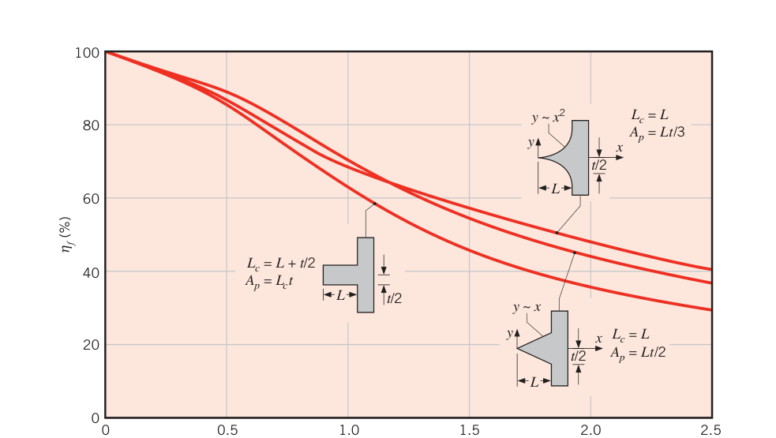
3.6.4 变截面肋片#
截面变化时，式 (3.66) 的第二项不能丢，解也不再是简单的指数/双曲函数。典型例子：环形矩形肋（环肋，厚度 \(t\) 沿 \(r\) 不变，截面积 \(A_c = 2\pi rt\) 随 \(r\) 变，图 3.20 内嵌图）。把式 (3.66) 的 \(x\) 换成 \(r\)，表面积 \(A_s = 2\pi(r^2 - r_1^2)\)：
令 \(m^2 \equiv 2h/(kt)\)、\(\theta \equiv T - T_\infty\)：
这是零阶修正贝塞尔方程（modified Bessel equation of order zero），通解
\(I_0\)、\(K_0\) 分别是第一类、第二类零阶修正贝塞尔函数。肋基给定温度 \(\theta(r_1) = \theta_b\)、绝热肋端 \(d\theta/dr|_{r_2} = 0\)，定出常数后：
其中 \(I_1(mr) = d[I_0(mr)]/d(mr)\)、\(K_1(mr) = -d[K_0(mr)]/d(mr)\) 是一阶修正贝塞尔函数（附录 B 有表）。
肋片散热：
效率：
肋端参与对流时，把肋端半径 \(r_2\) 换成修正半径 \(r_{2c} = r_2 + (t/2)\) 即可。结果画在图 3.20。
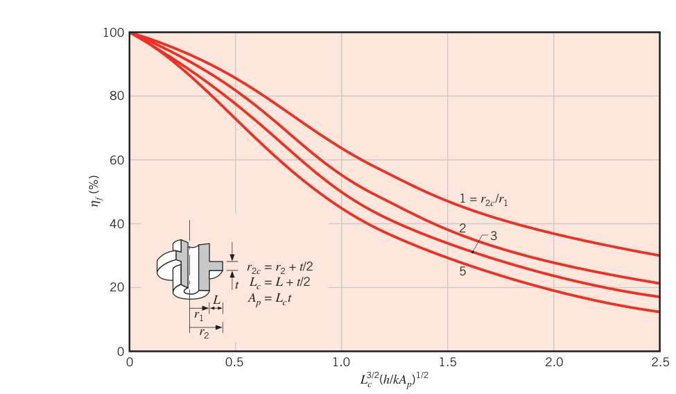
知道 \(\eta_f\) 后肋片热阻立刻可得，由式 (3.88)、(3.91)：
表 3.5 常见肋形的效率与几何（原表重排）
直肋（\(m = (2h/kt)^{1/2}\)）：
| 肋形 | 表面积 \(A_f\) | 纵剖面积/体积 | 效率 \(\eta_f\) |
|---|---|---|---|
| 矩形 | \(2wL_c\)，\(L_c = L + t/2\) | \(A_p = tL\) | \(\dfrac{\tanh mL_c}{mL_c}\) |
| 三角形 | \(2w[L^2 + (t/2)^2]^{1/2}\) | \(A_p = (t/2)L\) | \(\dfrac{1}{mL}\dfrac{I_1(2mL)}{I_0(2mL)}\) |
| 抛物线形 | \(w\{C_1L + (L^2/t)\ln[(t/L) + C_1]\}\)，\(C_1 = [1 + (t/L)^2]^{1/2}\) | \(A_p = (t/3)L\) | \(\dfrac{2}{[4(mL)^2 + 1]^{1/2} + 1}\) |
环肋与针肋（环肋 \(m = (2h/kt)^{1/2}\)，针肋 \(m = (4h/kD)^{1/2}\)）：
| 肋形 | 表面积 \(A_f\) | 体积 \(V\) | 效率 \(\eta_f\) |
|---|---|---|---|
| 环肋（矩形截面） | \(2\pi(r_{2c}^2 - r_1^2)\)，\(r_{2c} = r_2 + t/2\) | \(\pi(r_2^2 - r_1^2)t\) | 式 (3.96)，\(r_2\) 取 \(r_{2c}\) |
| 针肋（矩形，等径） | \(\pi DL_c\)，\(L_c = L + D/4\) | \((\pi D^2/4)L\) | \(\dfrac{\tanh mL_c}{mL_c}\) |
| 针肋（三角形） | \(\dfrac{\pi D}{2}[L^2 + (D/2)^2]^{1/2}\) | \((\pi/12)D^2L\) | \(\dfrac{2}{mL}\dfrac{I_2(2mL)}{I_1(2mL)}\) |
| 针肋（抛物线形） | \(\dfrac{\pi L^3}{8D}\{C_3C_4 - \dfrac{L}{2D}\ln[(2DC_4/L) + C_3]\}\) | \((\pi/20)D^2L\) | \(\dfrac{2}{[(4/9)(mL)^2 + 1]^{1/2} + 1}\) |
注：针肋三角形、抛物线形的 \(C_3 = 1 + 2(D/L)^2\)，\(C_4 = [1 + (D/L)^2]^{1/2}\)。直肋体积 \(V = wA_p\)。
肋片设计常以"达到规定散热效果时肋片材料用量与制造成本最小"为目标。等散热量下，三角形直肋所需体积远小于矩形；单位体积散热量 \((q/V)_f\) 最大的是抛物线肋，但它只比三角形肋略高一点，制造成本却高得多，很少划算。环向矩形肋是圆管换热的常用构型。
3.6.5 总表面效率#
\(\eta_f\) 刻画单根肋片；一整片肋阵列（含肋之间的裸基面）要用总表面效率（overall surface efficiency）\(\eta_o\)。图 3.21 给出两类典型阵列（矩形肋与环肋，\(S\) 为肋间距）。定义：
\(q_t\) 是总散热速率，\(A_t\) 是肋与裸基面（一次表面，prime surface）的总面积。\(N\) 根肋、每根面积 \(A_f\)、裸基面积 \(A_b\)：
总散热 = 肋的贡献（每根乘以 \(\eta_f\)）+ 裸基的贡献，设肋面与裸基面的 \(h\) 相同：
代回定义：
知道 \(\eta_o\) 后，肋阵列的总散热由式 (3.103) 一步算出。对应的热阻——肋阵列等效热阻：
拓展：从单肋到阵列的效率直觉
式 (3.107) 是个加权平均：肋片占总面积的份额 \(NA_f/A_t\) 越大，\(\eta_o\) 越贴近单片效率 \(\eta_f\)；肋片稀疏时 \(\eta_o \to 1\)。这也解释了例 3.10 中 \(q_t\) 随 \(N\) 近似线性增长——密排肋把 \(NA_f/A_t\) 推向 1，总面积的红利才能兑现。极限提醒：肋占比趋近 1 时 \(\eta_o = \eta_f\)，再靠减小肋间距扩面积，收益全被效率损失吃掉，该改的是 \(h\) 或肋厚。
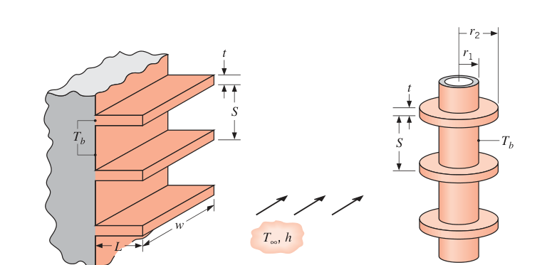
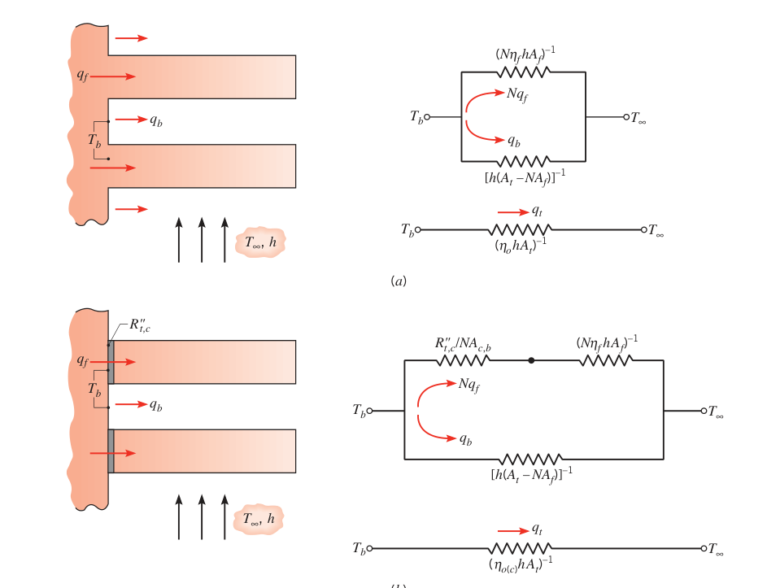
这个等效热阻把"肋片支路"与"裸基支路"两条并联路径打包成一个元件（图 3.22a）。若肋片是与壁体一体机加工出来的（铸造、挤压），肋基没有接触热阻；更常见的做法是肋片单独制造、再通过冶金粘接、粘合剂或压配合装到壁上——这时肋基支路里串进一个接触热阻 \(R''_{t,c}\)（图 3.22b），等效热阻变为
制造上必须保证 \(R''_{t,c} \ll R_{t,f}\)，否则肋片等于白装。
【例 3.10】摩托车气缸的环形肋片
已知（Known）：摩托车发动机气缸，2024-T6 铝合金，高 \(H = 0.15\ \mathrm{m}\)，外径 50 mm（\(r_1 = 25\ \mathrm{mm}\)）。典型工况：缸外表面 500 K，环境空气 300 K，\(h = 50\ \mathrm{W/(m^2 \cdot K)}\)。气缸与 5 片环形肋一体铸造，肋厚 \(t = 6\ \mathrm{mm}\)、肋长 \(L = 20\ \mathrm{mm}\)（\(r_2 = 45\ \mathrm{mm}\)）、等间距分布。
求（Find）：加肋片带来的散热量增量。
示意图（Schematic）：竖直圆柱外表面套 5 片等距环肋，\(T_b = 500\ \mathrm{K}\)，\(T_\infty = 300\ \mathrm{K}\)。
假设（Assumptions）：1. 稳态；2. 肋内一维径向导热；3. 物性为常数；4. 辐射可忽略；5. 有、无肋时表面对流系数相同。
物性（Properties）：表 A.1，2024-T6 铝（400 K）：\(k = 186\ \mathrm{W/(m \cdot K)}\)。
分析（Analysis）：加肋后总散热由式 (3.106) 给出。单肋表面积（用修正半径 \(r_{2c} = r_2 + t/2 = 48\ \mathrm{mm}\)）：
总面积（式 3.104，裸基为两肋之间的缸段）：
查图 3.20：\(r_{2c}/r_1 = 1.92\)，\(L_c = 0.023\ \mathrm{m}\)，\(A_p = L_c t = 1.380 \times 10^{-4}\ \mathrm{m^2}\)，横坐标
读得 \(\eta_f \approx 0.95\)。总散热：
不加肋时：
点评（Comments）：
- 肋片显著增强了散热，但还有余地：把肋厚固定在 6 mm、两端各留 2 mm、肋间隙不小于 4 mm，最多能装 \(N = H/(4 + 6)\ \mathrm{mm} = 15\) 片，\(q_t\) 随 \(N\) 从 5 片的约 690 W 近乎线性地涨到 15 片的约 1600 W；把肋厚减到 2 mm（肋间隙固定 4 mm）最多能装 25 片，\(q_t\) 可达约 3000 W。因为 \(NA_f \gg 2\pi r_1(H - Nt)\)，\(q_t\) 随 \(N\) 近似线性增长。
- 上述计算默认减小肋间隙不影响 \(h\)——只要相邻肋片表面的边界层不相互作用，这个假设就合理。
【例 3.11】燃料电池散热：加装肋片热沉
已知（Known）：例 1.5 中，50 mm × 50 mm × 6 mm 的 PEM 燃料电池要保持 \(T_c \approx 56.4^\circ\mathrm{C}\)，需带走 \(q = 11.25\ \mathrm{W}\)，无热沉时风速高达 \(V = 9.4\ \mathrm{m/s}\)（\(T_\infty = 25^\circ\mathrm{C}\)）。电池居中放在 50 mm × 26 mm 的绝热风道内，上下各留 10 mm 气道；电池自带小风扇，风道横截面积 \(A_c = W(H - t_c)\)。厂商数据：风扇功耗与体积流量之比 \(P_f/\dot\forall_f = C = 1000\ \mathrm{W/(m^3/s)}\)。改进方案：在电池上、下两面加装铝制（\(k = 200\ \mathrm{W/(m \cdot K)}\)）肋片热沉，接触面热阻 \(R''_{t,c} = 10^{-3}\ \mathrm{m^2 \cdot K/W}\)，基板厚 \(t_b = 2\ \mathrm{mm}\)，每根肋 \(L_f = 8\ \mathrm{mm}\)、\(t_f = 1\ \mathrm{mm}\)、贯穿电池全长 \(L_c = 50\ \mathrm{mm}\)；装热沉后辐射可忽略，气道内对流系数与几何相关：\(h = 1.78\,k_{\mathrm{air}}(L_f + a)/(L_f \cdot a)\)，\(a\) 为肋间隙。
求（Find）：1. 无热沉时系统净电功率 \(P_{\mathrm{net}} = P - P_f\)；2. 画等效热路，求把风扇功耗降到第 1 问一半所需的总肋片数。
示意图（Schematic）：装热沉截面见原书插图——电池居中，上下基板 + 密排肋片，气流走肋间通道。
假设（Assumptions）：1. 稳态；2. 电池侧缘与热沉前后面换热可忽略；3. 通过热沉一维传热；4. 肋端绝热；5. 物性为常数；6. 装热沉后辐射可忽略。
物性（Properties）：表 A.4，空气（300 K）：\(k_{\mathrm{air}} = 0.0263\ \mathrm{W/(m \cdot K)}\)，\(c_p = 1007\ \mathrm{J/(kg \cdot K)}\)，\(\rho = 1.1614\ \mathrm{kg/m^3}\)。
分析（Analysis）：
- 体积流量 \(\dot\forall_f = VA_c = V[W(H - t_c)] = 9.4\ \mathrm{m/s} \times [0.05\ \mathrm{m} \times (0.026 - 0.006)\ \mathrm{m}] = 9.4 \times 10^{-3}\ \mathrm{m^3/s}\)。净功率：
风扇耗电超过发电量——这套方案发不出净电。
- 风扇功耗减半要求 \(\dot\forall_f = 4.7 \times 10^{-3}\ \mathrm{m^3/s}\)。热路：\(T_c\) → 接触热阻 → 基板导热 → 并联的（裸基对流 ∥ N 根肋）→ \(T_\infty\)。系数 2 计入上、下两面：
裸基对流热阻与单肋热阻（绝热端，表 3.4）：
其中 \(P = 2(L_c + t_f) = 0.102\ \mathrm{m}\)，\(A_c = L_ct_f = 5 \times 10^{-5}\ \mathrm{m^2}\)，\(N\) 根肋合计 \(R_{t,f}(N) = R_{t,f}/N\)。肋间隙与 \(N\) 挂钩：\(a = (2W_c - Nt_f)/N\)。目标等效热阻：
总热阻 \(R_{\mathrm{tot}} = R_{t,c} + R_{t,\mathrm{base}} + R_{\mathrm{equiv}}\)，其中 \(R_{\mathrm{equiv}} = [R_{t,b}^{-1} + R_{t,f}(N)^{-1}]^{-1}\)。取 \(N = 22\)：\(a = 0.0035\ \mathrm{m}\)，\(h = 1.78 \times 0.0263 \times (0.058/2.8 \times 10^{-4}) = 19.1\ \mathrm{W/(m^2 \cdot K)}\)，\(m = [hP/(kA_c)]^{1/2} = 13.9\ \mathrm{m}^{-1}\)，\(R_{t,f}(N) = 2.94\ \mathrm{K/W}\)，\(R_{t,b} = 13.5\ \mathrm{K/W}\)，\(R_{\mathrm{equiv}} = 2.41\ \mathrm{K/W}\)，\(R_{\mathrm{tot}} = 2.61\ \mathrm{K/W}\)，对应 \(T_c = 25^\circ\mathrm{C} + 11.25\ \mathrm{W} \times 2.61\ \mathrm{K/W} = 54.4^\circ\mathrm{C}\)。\(N = 20\)、\(24\) 片对应 \(T_c = 58.9^\circ\mathrm{C}\)、\(50.7^\circ\mathrm{C}\)——\(N = 22\) 时最接近目标温度。上下各 11 片、共 22 片肋，此时
点评（Comments）：
- 好的热管理把一个发不出净电的方案变成可行方案。
- 冷却空气沿途升温，出口温度 \(T_o = T_i + q/(\rho c_p\dot\forall_f)\)：第 1 问 \(T_o = 25.9^\circ\mathrm{C}\)，第 2 问 \(T_o = 27.0^\circ\mathrm{C}\)——电池实际运行温度会比按 25°C 恒定流体温度的预测略高，反而更接近目标值。
- 本工况下 \(h\) 与风速无关——小截面通道内的流动常见这种特性（第 8 章）。肋片对 \(h\) 的增减效应在关键应用中要计入。
- 更完整的分析还要算肋间气道的压降（风机选型）。
- 肋端绝热假设成立——风道壁绝热良好。
3.7 生物传热方程#
人体传热越来越重要：极端温度的新疗法（热疗、冷冻手术）、极地/水下/太空等恶劣环境。活体组织比常规工程材料多两件事：代谢产热与流动血液与组织之间的能量交换。Pennes 对热方程做了修正，即生物传热方程（bioheat equation，Pennes 方程）。它有已知局限，但至今仍是理解活体组织传热的有用工具。稳态一维的简化版本：
代谢产热与血液换热都可看作"生成"效应，式 (3.44) 改写为
\(\dot q_m\) 与 \(\dot q_p\) 分别是代谢热源项与灌流热源项。灌流项刻画血液与组织间的能量交换：组织向血液散热时它是源，血液向组织供热时它是汇（血液灌流（perfusion），即流经单位体积组织的血流量）。\(k\) 已设为常数。
Pennes 对灌流项的模型：任一小块组织内，毛细血管中的血液以动脉温度 \(T_a\) 进入、以局部组织温度 \(T\) 离开；组织获得的热量 = 血液失去的热量。设灌流率为 \(\tilde\rho_b\)（每立方米组织每秒流过的血液体积，m³/(s·m³) 即 s⁻¹），用稳流热能方程 (1.12e) 按单位体积写出血液失热速率：
\(\rho_b\)、\(c_b\) 是血液的密度与比热；\(\tilde\rho_b\rho_b\) 是单位体积组织的血液质量流量。代回式 (3.111)：
借鉴肋片分析的经验，定义过余温度
并设 \(T_a\)、\(\dot q_m\)、\(\tilde\rho_b\)、血液物性均为常数，方程化为与肋片方程 (3.69) 同构的形式：
边界条件合适时，表 3.4 的解可以直接搬过来估计活体组织内的温度分布。
拓展：灌流项的符号与作用
把式 (3.112) 代入式 (3.111) 可以看到：灌流项等于 \(-\tilde\rho_b c_b T/k\)，相当于一个与局部温度成正比的负生成——组织越热、被 \(T_a\) 的血液带走的热越多，这正是它作为"温度稳定器"的物理本质。式 (3.114) 中的 \(\tilde m^2\) 与肋片的 \(m^2 = hP/kA_c\) 角色完全对应：\(\tilde m^{-1}\) 就是组织的"热穿透深度"。
【例 3.12】肌肉层的生物传热：皮肤温度由谁决定
已知（Known）：例 1.7 把皮肤/脂肪层内表面温度直接给了 35°C——实际上它由体内传热条件决定。考察一块肌肉层（厚 \(L_m = 30\ \mathrm{mm}\) 处为核心体温 \(T_c = 37^\circ\mathrm{C}\)，\(k_m = 0.5\ \mathrm{W/(m \cdot K)}\)，\(\dot q_m = 700\ \mathrm{W/m^3}\)，灌流率 \(\tilde\rho_b = 0.0005\ \mathrm{s^{-1}}\)，\(\rho_b = 1000\ \mathrm{kg/m^3}\)，\(c_b = 3600\ \mathrm{J/(kg \cdot K)}\)，\(T_a = T_c\)），上面覆着例 1.7 的皮肤/脂肪层（\(L_{sf} = 3\ \mathrm{mm}\)，\(k_{sf} = 0.3\ \mathrm{W/(m \cdot K)}\)，\(\varepsilon = 0.95\)，\(A = 1.8\ \mathrm{m^2}\)；层内灌流与代谢可忽略）。环境同例 1.7：空气 \(h = 2\ \mathrm{W/(m^2 \cdot K)}\)，水 \(h = 200\ \mathrm{W/(m^2 \cdot K)}\)，\(T_\infty = T_{sur} = 297\ \mathrm{K}\)。
求（Find）：人体散热速率与皮肤/脂肪层内表面温度 \(T_i\)（空气与水两种环境）。
示意图（Schematic）：肌肉层（\(T_c\) 在 \(x = 0\)，灌流 + 代谢）叠皮肤/脂肪层（\(T_i\) 到 \(T_s\)），外接对流/辐射。
假设（Assumptions）：1. 稳态；2. 肌肉层与皮肤/脂肪层内一维传热；3. \(\dot q_m\)、\(\tilde\rho_b\)、\(T_a\)、血液物性与导热系数均匀；4. \(h_r\) 取例 1.7 之值；5. 太阳辐照可忽略。
分析（Analysis）：皮肤/脂肪层 + 环境的总热阻（同例 3.1 的电路，空气侧 \(h_r = 5.9\ \mathrm{W/(m^2 \cdot K)}\)）：
通过它的散热速率 \(q = (T_i - T_\infty)/R_{\mathrm{tot}}\)。水中 \(h_r = 0\)、\(h = 200\)，\(R_{\mathrm{tot}} = 0.0083\ \mathrm{K/W}\)。
肌肉层由式 (3.114) 控制。边界条件（按温度给）：\(\theta(0) = T_c - T_a - \dot q_m/(\tilde\rho_b c_b) = \theta_c\)，\(\theta(L_m) = \theta_i\)。两端都是给定温度，对应表 3.4 的情形 C：
关心的是肌肉流入皮肤/脂肪层的热量（\(x = L_m\) 处）：
令式 (2) 等于 \((T_i - T_\infty)/R_{\mathrm{tot}}\)，解出 \(T_i\)（\(\theta_i\) 中也含 \(T_i\)）：
先算肌肉层参数（过余温度是温差，K 与 °C 等价）：
空气（\(k_mA\tilde m R_{\mathrm{tot}} = 0.5 \times 1.8 \times 60 \times 0.076 = 4.10\)，\(T_\infty = 24^\circ\mathrm{C}\)）：
与例 1.7 假设的 35°C 相当接近。散热速率：
也与例 1.7 的 146 W 接近。
水（\(R_{\mathrm{tot}} = 0.0083\ \mathrm{K/W}\)，\(k_mA\tilde m R_{\mathrm{tot}} = 0.45\)）：
例 1.7 在水环境中算得 1320 W——它硬性假设内表面 35°C，错了；完整计算给出 514 W，且皮肤温度只有 25.4°C。
点评（Comments）：
- 真实人体会对热环境做多种调节：冷了就颤抖（提高 \(\dot q_m\)），热了就提高皮肤附近灌流率（局部抬升皮肤温度、加大散热）。
- 活体组织的"真实"导热系数极难测：测量有创，而且导热与灌流的效应难以实验分离。工程上测"有效导热系数"（把灌流折算进去），但它必然依赖灌流率——而灌流率随热环境与试样状态变化。
- 对一列灌流率 \(\tilde\rho_b\) 重复计算可得 \(q\) 随 \(\tilde\rho_b\) 的变化：水环境的影响更强——肌肉温度更低，\(T_a\) 温暖血液的灌流效应更显著。
3.8 温差电发电#
全球约 60% 的能量以低品位废热的形式浪费掉——温差电（thermoelectric）发电提供了回收方案，其基本原理是塞贝克效应（Seebeck effect）：材料内建立温度梯度时，会感应出相应的电压梯度。塞贝克系数（Seebeck coefficient）\(S\) 是材料物性（V/K），对常物性一维导热材料（图 3.23a）：
\(S\) 可正可负（取决于材料对电子的散射方式）；金属中很小，某些半导体材料中相当大。
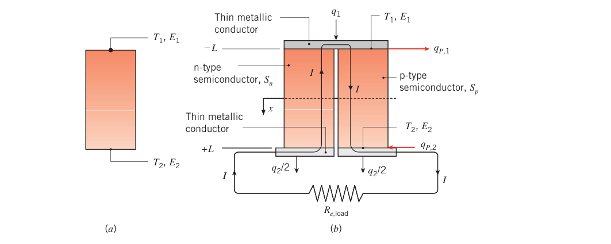
把材料接进电路，塞贝克电压就能驱动电流 \(I\)、输出电功率。图 3.23b 的简化回路：p 型与 n 型半导体电偶（p 型 \(S_p > 0\)，n 型 \(S_n < 0\)，通过掺入微量第二组元控制），上端供热、下端散热，金属导膜连接外部负载 \(R_{e,\mathrm{load}}\)。
温差电还伴随珀耳帖效应（Peltier effect）：电流穿过两种不同材料的界面时，界面处吸热或放热。吸热速率
\(S_{p\text{-}n} \equiv S_p - S_n\) 为差分塞贝克系数，\(T\) 用开尔文。电流从 n 型流向 p 型时界面吸热为正（放热为负）：图 3.23b 中，上端（热端）金属膜–半导体界面吸热，下端（冷端）界面放热。
\(T_1 > T_2\) 时器件的吸、放热速率 \(q_1\)、\(q_2\) 由能量方程解出。稳态一维分析（图 3.23b）如下。
设金属导膜导热、导电都好，欧姆耗散只发生在半导体电偶内（每个电偶截面积 \(A_{c,s}\)）。每个电偶电阻 \(R_{e,s} = \rho_{e,s}(2L)/A_{c,s}\)，由式 (3.43) 得电偶内均匀体积生成率：
忽略接触热阻、两电偶物性相同（\(S_p = -S_n\) 除外），由附录 C 的式 (C.7) 写出电偶两端的导热速率（括号外因子 2 计入两根电偶）：
珀耳帖效应使 \(q_1\)、\(q_2\) 不等于上述导热速率。在 \(x = -L\) 的金属膜–半导体界面上做表面能量平衡：
在 \(x = +L\)：
合并式 (3.118b) 与 (3.119)：
合并式 (3.118a) 与 (3.120)：
对器件做总体能量平衡，塞贝克效应产出的电功率：
其中 \(R_{e,\mathrm{tot}} = 2R_{e,s}\)。
单个电偶对的塞贝克电压很小。把 \(N \gg 1\) 对电偶串联成温差电模块（图 3.24a），外覆薄陶瓷绝缘层（提供刚度与电绝缘，热阻忽略）。模块的 \(q_1\)、\(q_2\) 与总电功率：
其中有效塞贝克系数 \(S_{p\text{-}n,\mathrm{eff}} = NS_{p\text{-}n}\)、总内阻 \(R_{e,\mathrm{eff}} = NR_{e,s}\)、模块 p–n 半导体阵列的导热热阻 \(R_{t,\mathrm{cond,mod}} = L/(NA_{c,s}k_s)\)。对流加热/冷却的温差电模块等效热路见图 3.24b：热源侧对流热阻串进 \(T_1\) 节点，冷侧同理，\(I S_{p\text{-}n,\mathrm{eff}}T\) 与 \(\pm I^2R_{e,\mathrm{eff}}\) 是挂在节点上的"热流源"。
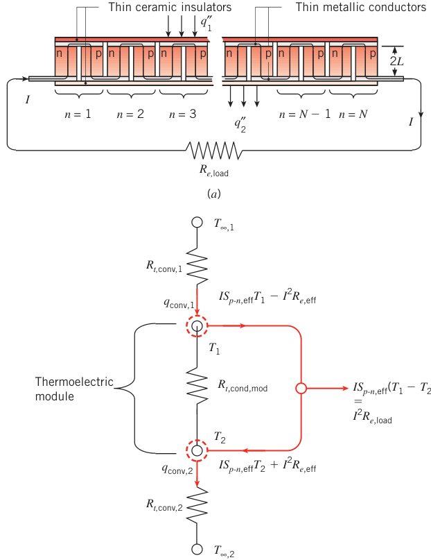
回到单对电偶回路，效率定义为 \(\eta_{TE} = P/q_1\)，对电流 \(I\)（通过改变负载电阻调节）求极值，得最大效率：
其中
效率随 \(Z\bar T\) 增大而增大，\(Z\bar T\) 就是温差电发电的无量纲品质因数（dimensionless figure of merit）。\(Z\bar T \to \infty\) 时 \(\eta_{TE} \to 1 - T_2/T_1 = 1 - T_c/T_h = \eta_C\)——卡诺效率，温差电也不例外。而且按 1.3.2 节的逻辑：\(T_1\)、\(T_2\) 必须由传热分析算出来，卡诺效率（从而温差电效率）在换热分析完成前根本定不了。
\(Z\bar T\) 里的电导率与导热系数相互纠缠（2.2 节：电子导电好的材料往往电子导热也好，威德曼–弗兰兹行为的影子），当前研究主攻半导体纳米结构调控——解耦声子输运与电子输运、分别压低 \(k_s\) 与 \(\rho_{e,s}\)。目前室温下 \(Z\bar T \approx 1\) 已容易实现。温差电模块也可以反向运行：输入电功率即可精确控制陶瓷外表面的吸/放热速率——温差电制冷器/加热器，应用广泛。
【例 3.13】跑车尾气温差电阵列
已知（Known）：跑车排气管上装 \(M = 48\) 块温差电模块。每块：有效塞贝克系数 \(S_{p\text{-}n,\mathrm{eff}} = 0.1435\ \mathrm{V/K}\)，内阻 \(R_{e,\mathrm{eff}} = 4\ \Omega\)，宽与长 \(W = 54\ \mathrm{mm}\)，内含 \(N = 100\) 对电偶，每对总长 \(2L = 5\ \mathrm{mm}\)、截面积 \(A_{c,s} = 1.2 \times 10^{-5}\ \mathrm{m^2}\)、导热系数 \(k_s = 1.2\ \mathrm{W/(m \cdot K)}\)。热面接触 \(T_{\infty,1} = 550^\circ\mathrm{C}\) 的尾气（\(h_1 = 40\ \mathrm{W/(m^2 \cdot K)}\)），冷面接触 \(T_{\infty,2} = 105^\circ\mathrm{C}\) 的高压水（\(h_2 = 500\ \mathrm{W/(m^2 \cdot K)}\)）。模块串联，负载 \(R_{e,\mathrm{load}} = 400\ \Omega\)。
求（Find）：从尾气中回收的电功率。
示意图（Schematic）：48 块模块并排贴在排气管上，热面朝尾气、冷面朝水，串联后接 400 Ω 负载。
假设（Assumptions）：1. 稳态；2. 一维传热；3. 物性为常数；4. 电、热接触热阻可忽略；5. 辐射及模块内气体换热可忽略；6. 金属触点与陶瓷绝缘层的导热热阻可忽略。
分析（Analysis）：先分析单块模块。p–n 阵列的导热热阻：
由式 (3.125)：
由式 (3.126)：
热面牛顿冷却公式：
冷面：
四个方程、五个未知数（\(q_1, q_2, T_1, T_2, I\)）。第五个方程来自电路：48 块串联模块的输出功率全部耗散在负载上。由式 (3.127)：
且
式 (1)–(6) 联立求解：
点评（Comments）：
- 式 (1)–(5) 照着图 3.24b 的等效热路就能直接写出来。
- 模块表面温度 \(T_1 = 173^\circ\mathrm{C}\)、\(T_2 = 134^\circ\mathrm{C}\)。若题目直接给这两个温度，电功率由式 (5)、(6) 立得；但任何实际的温差电发电机设计，都必须先做传热分析才能定功率。
- 功率对两侧对流热阻极其敏感：\(h_1 = h_2 \to \infty\) 时 \(P_{\mathrm{tot}} = 5900\ \mathrm{W}\)。工程上用肋片热沉减小模块与流体间的热阻、拉大模块两侧温差——热管理的质量直接决定发电量。
- 用温差电回收尾气余热可以取代发电机（alternator）：发动机净功率提升、整车减重、油耗最高改善 10%。
- 温差电模块反用作座椅加热/冷却，替代整车空调：仅在美国，用车用温差电座椅制冷替代蒸汽压缩空调，每年可减排相当于 4500 万公吨的 CO₂。
3.9 微纳尺度导热#
一维稳态导热的收尾：当物理尺寸接近甚至小于能量载子的平均自由程（mean free path）\(\lambda_{\mathrm{mfp}}\) 时，微纳尺度效应可能变得重要——连续介质假设开始动摇。
3.9.1 薄气层导热#
图 3.25：两块等温固体表面（\(T_{s,1}\)、\(T_{s,2}\)）之间夹厚度 \(L\) 的气体层。气体分子不停撞击两个壁面，也彼此碰撞交换能量。气层厚（\(L = L_1\)，图 3.25a）时，一个分子撞其他分子的次数远多于撞壁面的次数；气层薄（\(L = L_2 \ll L_1\)，图 3.25b）时，分子撞壁面的概率大增。分子撞击壁面后被散射的温度不必等于壁面温度——壁面–分子碰撞因此会左右热流量 \(q_x\)，前提是 \(L/\lambda_{\mathrm{mfp}}\) 变小。
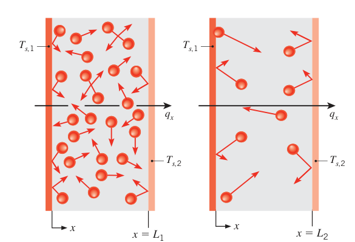
分子与壁面碰撞、散射的行为用热适应系数（thermal accommodation coefficient）\(\alpha_t\) 描述：
\(T_i\) 是分子撞壁前的有效温度，\(T_{sc}\) 是被壁面散射后的温度，\(T_s\) 是壁面温度。散射分子温度与壁面相同则 \(\alpha_t = 1\)；分子动能毫发无损地反弹（\(T_{sc} = T_i\)）则 \(\alpha_t = 0\)。
夹在 \(T_{s,1}\)、\(T_{s,2} > T_{s,1}\) 两表面间的理想气体，一维导热的热流量可写成两个分子尺度热阻串联：
\(\gamma = c_p/c_v\) 是比热比；两表面材料相同、\(\alpha_t\) 相等、温差相对冷壁很小（\((T_{s,1} - T_{s,2})/T_{s,2} \ll 1\)）。两式合并：
读法：\(L/\lambda_{\mathrm{mfp}}\) 大且 \(\alpha_t \ne 0\) 时 \(R_{t,\mathrm{m-s}}\) 可忽略，式 (3.131) 退化为傅里叶定律（式 3.6）；\(L/\lambda_{\mathrm{mfp}}\) 小时 \(R_{t,\mathrm{m-s}}\) 可能占主导。由式 (2.11)，平均自由程随气压降低而增大——所以低气压下 \(R_{t,\mathrm{m-s}}\) 增大，\(L/\lambda_{\mathrm{mfp}}\) 小时热流量与气压有关（连续介质理论预言不了这件事）。\(\alpha_t\) 的实测值：空气–铝、空气–钢约 0.87–0.97；氦气与洁净金属表面可低于 0.02。式 (3.131)、(3.132) 适用于 \(L/\lambda_{\mathrm{mfp}} \gtrsim 0.1\) 的情形；常压空气对应 \(L \gtrsim 10\ \mathrm{nm}\)。
拓展：真空多层绝热为什么最怕漏气
高真空隔热（杜瓦瓶、真空保温板）的机理之一正是本节：抽掉气体后间隙导热消失；即便留一点稀薄气体，\(\lambda_{\mathrm{mfp}}\) 随气压下降而暴涨，\(L/\lambda_{\mathrm{mfp}}\) 掉进分子区，热流量被压到与气压成正比地小。反过来，孔径 20 nm 的气凝胶（例 3.1）在常压下就达到了同样的效果——孔比分子平均自由程还小，气体导热被微尺度效应锁死。
3.9.2 薄固体膜导热#
沿薄膜方向或穿过薄膜的一维导热在 2.2.1 节用 \(k_x\)、\(k_y\) 讨论过。把跨膜导热系数修正式 (2.9a) \(k_x = k[1 - \lambda_{\mathrm{mfp}}/(3L)]\) 与式 (3.5) 合并：
\(L/\lambda_{\mathrm{mfp}}\) 大时退化为式 (3.4)。更多 \(k_x\) 表达式见文献。
3.10 小结#
一维稳态导热数学上简单，工程上到处都是；即便严格的一维条件不成立，也常能近似得到足够准的结果。这一章必须烂熟的三板斧：等效热路（串联求和、并联合并、界面温度法）、三种几何的导热热阻表达式（表 3.3）、以及"热方程/傅里叶定律 → 温度分布 → 热流量"的两条流程（标准法与积分法）。内热源问题的结论（抛物线分布、表面温度与流体的关系、热阻网络失效）要能独立推导；扩展表面的设计与性能计算（肋方程、效率、效能、总表面效率）要能上手；最后是三个延伸场景——人体、温差电、微纳尺度——把同一套语言用到了极限尺度上。
原书章末自测问题（3.10 节复习用，摘译）
- 什么条件下热流密度是与方向无关的常数？若条件不满足，用物理理由说明为何不再与方向无关。
- 无内热源、一维稳态的圆筒/球壳：径向热流密度与半径有关吗？热流量呢？（前者有关、后者无关）
- 三种几何中无生成一维稳态的温度分布各是什么形状？
- 热阻是什么？如何定义？单位？
- 平壁、圆筒、球壁的导热热阻，表面对流热阻、对大环境辐射热阻，能默写吗？
- 临界绝热半径的物理根源是什么？\(k\) 与 \(h\) 如何影响其值？
- 导热系数、换热系数、发射率分别如何影响相应的热阻？
- 对流与辐射同时换热时，热路上如何表示？（并联）
- \(h_o = 5h_i\) 时，两侧表面温度各自更接近哪侧流体温度？
- 导热热阻能用于实心圆柱/球吗？（能，径向热阻式照用）
- 接触热阻是什么？如何定义？给定面积界面与单位面积的单位各是什么？
- 表面粗糙度如何影响接触热阻？
- 界面空气换成氦气、或抽成真空，接触热阻怎么变？
- 总传热系数 \(U\) 是什么？如何定义、与总热阻什么关系、单位？
- 均匀生成 + 表面对流的实心圆柱：热流密度与热流量各随半径怎么变？（\(q'' \propto r\)，\(q \propto r^2\)）
- 实心球呢？（\(q''\) 与 \(r\) 无关，\(q \propto r^3\)）
- 有内热源、表面完全绝热的圆柱/球能达到稳态吗？（不能，能量只进不出）
- 有热生成的材料能表示成热阻放进电路吗？（不能——热流不再是常数）
- 微波炉加热的物理机制是什么？与传统（对流/辐射）烤箱有何不同？（介质对电磁辐射的体积吸收 vs 表面换热）
- 辐射被半透明介质沿途吸收时，\(\dot q\) 均匀吗？随深度怎么变？（不均匀，随深度衰减）
- 厚 2L、两侧等温对流、均匀生成的平壁，与厚 L、一侧绝热一侧对流的平壁有何相似？（同一问题的两种画法）
- 在表面上装肋片的目的是什么？
- 肋片一般方程的一维假设为什么是近似？何时是好的近似？
- 等截面直肋内某 \(x\) 处，横截面（\(y\) 方向）上的温度分布长什么样？写出 \((x, t/2)\) 处的表面能量平衡。
- 肋片效能 \(\varepsilon_f\) 是什么？取值范围？何时最有效？
- 肋片效率 \(\eta_f\) 是什么？取值范围？何时大？
- 肋片热阻 \(R_{t,f}\) 是什么？单位？
- \(k\) 增大、\(h\) 增大、\(L\) 增大、肋厚（或直径）增大，分别如何影响 \(\varepsilon_f\)、\(\eta_f\)、\(R_{t,f}\)？
- 热水在管内、空气在管外：要强化换热，肋片装内侧还是外侧？（外侧——\(h\) 小的一侧）
- 肋片一体铸造/挤压 vs 钎焊/粘接：从传热角度选哪个？（一体成形，无接触热阻）
- 生物传热方程两个热源项的物理来源是什么？灌流项何时是热汇？（\(T > T_a\) 时血液带走热量）
- 热沉（肋片）如何提高温差电器件的发电量？（拉大模块两侧温差）
- 分子–壁面碰撞热阻 \(R_{t,\mathrm{m-s}}\) 何时重要？（\(L/\lambda_{\mathrm{mfp}}\) 小时）
坑与陷阱#
8 个容易踩的坑
- 有内热源就没有热阻：热阻的全部前提是"热流量沿途恒定"。一旦 \(\dot q \ne 0\)（焦耳加热、化学反应、核吸收），\(q\) 沿程变化，3.1、3.3 节的 \(L/kA\)、\(\ln(r_2/r_1)/2\pi Lk\) 全部失效，发热层不能画成电路里的电阻（例 3.7 点评 1、3.5.4 节的正式警告）。
- 圆筒与球壁：热流量恒定 ≠ 热流密度恒定：\(q_r\) 与 \(r\) 无关，但 \(q_r''\) 在圆筒按 \(1/r\)、在球按 \(1/r^2\) 变。表 3.3 里"热流密度"一栏的 \(r\) 和 \(r^2\) 别抄丢。
- 临界绝热半径的反直觉：\(r_i < r_{cr} = k/h\) 时，加保温层反而增大散热（球为 \(2k/h\)）。电线绝缘是受益方，蒸汽管道是受害方。平壁没有临界厚度。典型保温材料 + 自然对流下 \(r_{cr}\) 只有 3 mm，工程上通常不用操心——但小线径 + 高 \(k\) 保温的场景要验算。
- 接触热阻默认为零是危险习惯：界面温降可以很可观（表 3.1、3.2）。芯片结温这类设计计算要像例 3.2 那样取表中最大值做保守估计；真空界面、粗糙表面、低压力都是放大器。
- 肋片不是装了就赚：\(\varepsilon_f < 2\) 不值得装；肋片自身是导热热阻，\(m\) 大（\(h\) 高、\(k\) 低、肋又长又薄）时温度沿肋掉得快，远端肋面积近乎白给。装在 \(h\) 小的一侧（气体侧），别装反。
- 查效率图前先做两个换算：带端部对流的真实肋要用修正长度 \(L_c = L + t/2\)（矩形）、\(L + D/4\)（针肋），且横坐标是 \(L_c^{3/2}(h/kA_p)^{1/2}\)、\(A_p\) 用修正后的定义；近似成立条件 \(ht/k \le 0.0625\)（或 \(hD/2k \le 0.0625\)）不满足时误差就不可忽略。
- 肋阵列里接触热阻吃掉收益：后装式肋片带 \(R''_{t,c}\)，式 (3.110) 里的 \(C_1\) 把 \(\eta_f\) 折成 \(\eta_f/C_1\)；制造上必须 \(R''_{t,c} \ll R_{t,f}\)，否则 \(N\) 加再多效率也上不去。
- 温差电效率不是卡诺效率：式 (3.128) 的 \(\eta_{TE}\) 还要乘上品质因数因子；而且 \(T_1\)、\(T_2\) 不是"流体温度"，必须由对流–导热网络解出来（例 3.13 的 6 个方程联立）。热侧 \(h\) 太小，\(T_1\) 就被拉低，\(P\) 崩得比想象快。
速览#
- 无内热源 + 常数 \(k\) + 一维稳态：平壁线性、圆筒对数、球壁 \(1/r\) 型温度分布；\(q\)（不是 \(q''\)）处处恒定。
- 三种几何的导热热阻（表 3.3）：\(L/kA\)、\(\ln(r_2/r_1)/2\pi Lk\)、\((1/r_1 - 1/r_2)/4\pi k\)；对流 \(1/hA\)、辐射 \(1/h_rA\)（与对流并联）。
- 复合壁：\(q = \Delta T/R_{\mathrm{tot}}\)，\(R_{\mathrm{tot}} = \sum R_t\)，\(UA = 1/R_{\mathrm{tot}}\)；界面温度由逐段 \(qR_t\) 累加得到。
- 串–并联复合壁的两种一维画法（等温面假设 / 绝热面假设）夹逼真实热流量，\(k\) 相差越大夹得越开。
- 接触热阻 \(R''_{t,c} = (T_A - T_B)/q''\)：粗糙度 + 间隙（多为空气）是根源；降压/抛光/高 \(k\) 填料（软金属箔、导热脂）可减小，抽真空增大。
- 多孔介质 \(k_{eff}\)：串联模型给下限、并联模型给上限；Maxwell 公式（式 3.25，\(\varepsilon \lesssim 0.25\)）给出更准的估计；注意方向依赖性。
- 内热源：平壁对称分布 \(T = \frac{\dot q L^2}{2k}(1 - x^2/L^2) + T_s\)，\(T_s = T_\infty + \dot q L/h\)（厚 2L 对称壁 = 厚 L 单侧绝热壁）；实心圆柱 \(T_o - T_s = \dot q r_o^2/4k\)，\(T_s = T_\infty + \dot q r_o/2h\)；有生成不能用热阻网络。
- 临界绝热半径 \(r_{cr} = k/h\)（圆柱）、\(2k/h\)（球）：总热阻的最小值点 = 散热最大值点。
- 肋片：一般方程 (3.66)；等截面肋四种肋端解（表 3.4）；\(\eta_f = \tanh(mL_c)/mL_c\)（修正长度 \(L_c = L + t/2\) 或 \(L + D/4\)）；\(\varepsilon_f = \sqrt{kP/hA_c}\)（无限肋，判据 \(\varepsilon_f \ge 2\)）；\(\eta_o = 1 - (NA_f/A_t)(1 - \eta_f)\)，\(R_{t,o} = 1/\eta_o hA_t\)。
- 生物传热：\(\theta = T - T_a - \dot q_m/(\tilde\rho_b c_b)\) 满足肋片型方程，\(\tilde m^2 = \tilde\rho_b c_b/k\)。温差电：\(P = IS_{p\text{-}n}(T_1 - T_2) - I^2R_{e,\mathrm{tot}}\)，\(\eta_{TE} = (1 - T_2/T_1)\frac{\sqrt{1+Z\bar T} - 1}{\sqrt{1+Z\bar T} + T_2/T_1}\)，上限是卡诺效率。微纳尺度：\(L/\lambda_{\mathrm{mfp}}\) 是判据，气层多出分子–壁面热阻，薄膜导热系数乘 \([1 - \lambda_{\mathrm{mfp}}/(3L)]\)。
术语速查#
| 英文 | 中文 | 一句话 |
|---|---|---|
| plane wall | 平壁 | 等截面一维导热的基本几何，温度线性分布 |
| composite wall | 复合壁 | 多层材料壁体，热路上是热阻串并联网络 |
| thermal resistance | 热阻 | 驱动势与输运速率之比 \(\Delta T/q\)，K/W |
| thermal circuit | 热路（热阻网络） | 仿电路画出的传热分析图，串联求和、并联合并 |
| overall heat transfer coefficient | 总传热系数 | \(U\)，\(q = UA\Delta T\)，\(UA = 1/R_{\mathrm{tot}}\)，W/(m²·K) |
| contact resistance | 接触热阻 | 界面粗糙度与间隙造成的附加热阻 \(R''_{t,c}\)，可用导热脂、软金属箔填料压低 |
| porous medium / porosity | 多孔介质 / 孔隙率 | 静止固体 + 流体的组合体；孔隙率 \(\varepsilon\) 为流体体积占比 |
| effective thermal conductivity | 有效导热系数 | \(k_{eff}\)，多孔介质等效匀质导热能力，串并联模型夹逼 |
| critical insulation radius | 临界绝热半径 | \(r_{cr} = k/h\)（圆柱），散热最大值对应的保温外半径 |
| volumetric heat generation | 体积热生成 | 单位体积单位时间的生成热 \(\dot q\)，W/m³（\(I^2R\) 焦耳加热等） |
| excess temperature | 过余温度 | \(\theta \equiv T - T_\infty\)，肋片与生物传热分析的变换变量 |
| extended surface | 扩展表面 | 边界传热方向垂直于内部导热主方向的表面 |
| fin | 肋片（翅片） | 靠扩大对流面积强化换热的扩展表面 |
| straight / annular / pin fin | 直肋 / 环肋 / 针肋 | 按装配方式与截面形状分的肋片三类 |
| fin effectiveness | 肋片效能 | \(\varepsilon_f = q_f/(hA_{c,b}\theta_b)\)，装肋值不值的判据（≥ 2） |
| fin efficiency | 肋片效率 | \(\eta_f = q_f/(hA_f\theta_b)\)，实际散热与理想上限之比 |
| overall surface efficiency | 总表面效率 | \(\eta_o\)，整个肋阵列（含裸基面）的等效效率 |
| prime surface | 一次表面 | 肋阵列中未装肋的裸基面 |
| bioheat equation | 生物传热方程 | Pennes 修正：导热 + 代谢产热 + 血液灌流 |
| perfusion rate | 血液灌流率 | 单位体积组织每秒流过的血液体积 \(\tilde\rho_b\) |
| Seebeck effect | 塞贝克效应 | 温度梯度感应电压梯度，温差发电的原理 |
| Peltier effect | 珀耳帖效应（又译帕尔帖） | 电流跨异种材料界面时的吸/放热 |
| figure of merit | 品质因数 | \(Z\bar T = S^2\bar T/\rho_{e,s}k_s\)，决定温差电效率上限 |
| thermal accommodation coefficient | 热适应系数 | \(\alpha_t\)，分子撞壁散射温度接近壁面程度的度量 |
| mean free path | 平均自由程 | \(\lambda_{\mathrm{mfp}}\)，分子两次碰撞间的平均路程，微纳尺度判据 |